B4_flowkit · Fable 5.2 · attempt mnQAZez
Batch fb1 · job fb1_B_EXP23000279_rep1_230309_flowkit_claude-fable-5-2 · trial B_EXP23000279_rep1_230309_flowki__mnQAZez. Long tool outputs are cut at 6,000 characters.
Score
0.60
0.60
Minutes
11.9
11.9
Agent cost
$4.47
$4.47
Steps
127
127
Screenshots / images
25
25
2
tool call · Bash
cd /task; cat inputs/plan.md; echo; cat inputs/plate_layout.csv; ls -la inputs/raw; ls /root/.claude/projects/-task/memory/ 2>/dev/null
3
tool output
# EXP23000279 | Caspase Assay in WT and PGRNKO iPSC Derived Neurons Notebook plan for the run acquired on 2023-03-09. This is the scientist's text as written, up to the start of this run's results. ## DAY 2023-03-09 ### Background: Loss of function of PGRN has been shown to negatively impact neural cell health reflected by increased cell death and caspase activity. Caspases are important mediators of the cell death pathway (apoptosis). Caspases are a group of proteases that result in cleavage of protein substrates subsequently leading to cell disassembly. For the PGRN RNAswap program we will want to measure caspase activity in iPSC derived neurons before and after adding the PGRN RNAswap constructs to ensure that PGRN protein replacement is rescuing the health of neurons. Before testing if AAV-PGRN constructs help restore neural health I will test and optimize the assay on the neurons with no AAV. ### Objective: For first round of experiments will be optimizing the assay. The goal will be to determine if a difference in caspase activity is present in PGRNKOs compared to WT PGP1 neurons. Camptothsesin (topoisomerase inhibitor) will be added. ### Materials: - Camptothecin - CellEvent Caspase 3/7 reagent - DMSO - Zombie NIR ### Procedure: - Differentiate WT and PGRNKO iPSC into neurons - Once cells are sufficiently neuronal can run caspase assay. - Add camptothecin Follow plate maps below. | Dose | for 1 well | |---|---| | 10uM | 20uL of 250uM stock into 500uL media | | 5uM | 10uL of 250uM stock into 500uL media | | 2uM | 4uL of 250uM stock into 500uL media | | 1uM | 2uL of 250uM stock into 500uL media | | DMSO (no treatment controls) | 10uL into 500uL media | - Incubate with camptothecin for 4.5hrs WT plate map (as written): ``` WT DMSO | WT 5uM camptothecin | WT caspase stain only WT no treatment | WT 10uM camptothecin | WT caspase stain only WT 1uM camptothecin | WT no stain | WT L/D only WT 2uM camptothecin | WT no stain | WT L/D only ``` KO plate map (as written): ``` KO DMSO | KO 5uM camptothecin | KO caspase only KO no treatment | KO 10uM camptothecin | KO caspase only KO 1uM camptothecin | KO no stain | KO L/D only KO 2uM camptothecin | KO no stain | KO L/D only ``` 5. Run flow Flow plate map (as written; the remaining rows of the table are empty): ``` WT no stain | WT no stain | WT caspase only | WT caspase only | WT L/D only | WT L/D only | WT 10uM camptothecin | WT 5uM camptothecin | WT 2uM camptothecin | WT 1uM camptothecin | WT DMSO | WT no treatment KO no stain | KO no stain | KO caspase only | KO caspase only | KO L/D only | KO L/D only | KO 10uM camptothecin | KO 5uM camptothecin | KO 2uM camptothecin | KO 1uM camptothecin | KO DMSO | KO no treatment ``` 3. Run CellEvent flow assay - Aspirate media and wash with PBS - Add 150uL accutase incubate for 5-10min - Add 75uL FBS and collect into 96w round bottom plate - spin down 200xg for 5min - Add 200uL Zombie NIR at 1:500 (4mL PBS+ 8uL Zombie) Incubate for 10min - Spin down and remove Zombie stain - Add 200uL of Cell Event Caspase 3/7 Detection reagent (1:1000) in flow staining buffer. Incubate for 30min at 37C (4mL +4uL reagent) - Analyze the samples without fixing. file,well,sample,genotype,treatment Caspase_WT_KO_optimization_caspase_Group_A2.fcs,A2,WT no stain,WT,no stain Caspase_WT_KO_optimization_caspase_Group_A4.fcs,A4,WT caspase only,WT,caspase only Caspase_WT_KO_optimization_caspase_Group_A6.fcs,A6,WT L/D only,WT,L/D only Caspase_WT_KO_optimization_caspase_Group_A7.fcs,A7,WT 10uM camptothecin,WT,10uM camptothecin Caspase_WT_KO_optimization_caspase_Group_A8.fcs,A8,WT 5uM camptothecin,WT,5uM camptothecin Caspase_WT_KO_optimization_caspase_Group_A9.fcs,A9,WT 2uM camptothecin,WT,2uM camptothecin Caspase_WT_KO_optimization_caspase_Group_A10.fcs,A10,WT 1uM camptothecin,WT,1uM camptothecin Caspase_WT_KO_optimization_caspase_Group_A11.fcs,A11,WT DMSO,WT,DMSO Caspase_WT_KO_optimization_caspase_Group_A12.fcs,A12,WT no treatment,WT,no treatment Caspase_WT_KO_optimization_caspase_Group_B2.fcs,B2,KO no stain,KO,no stain Caspase_WT_KO_optimization_caspase_Group_B4.fcs,B4,KO caspase only,KO,caspase only Caspase_WT_KO_optimization_caspase_Group_B6.fcs,B6,KO L/D only,KO,L/D only Caspase_WT_KO_optimization_caspase_Group_B7.fcs,B7,KO 10uM camptothecin,KO,10uM camptothecin Caspase_WT_KO_optimization_caspase_Group_B8.fcs,B8,KO 5uM camptothecin,KO,5uM camptothecin Caspase_WT_KO_optimization_caspase_Group_B9.fcs,B9,KO 2uM camptothecin,KO,2uM camptothecin Caspase_WT_KO_optimization_caspase_Group_B10.fcs,B10,KO 1uM camptothecin,KO,1uM camptothecin Caspase_WT_KO_optimization_caspase_Group_B11.fcs,B11,KO DMSO,KO,DMSO Caspase_WT_KO_optimization_caspase_Group_B12.fcs,B12,KO no treatment,KO,no treatment total 295248 dr-xr-xr-x 2 root root 4096 Nov 10 16:58 . dr-xr-xr-x 3 root root 4096 Nov 10 16:58 .. -r--r--r-- 1 root root 19901440 Nov 10 16:58 Caspase_WT_KO_optimization_caspase_Group_A10.fcs -r--r--r-- 1 root root 13588120 Nov 10 16:58 Caspase_WT_KO_optimization_caspase_Group_A11.fcs -r--r--r-- 1 root root 14734864 Nov 10 16:58 Caspase_WT_KO_optimization_caspase_Group_A12.fcs -r--r--r-- 1 root root 13174696 Nov 10 16:58 Caspase_WT_KO_optimization_caspase_Group_A2.fcs -r--r--r-- 1 root root 15877720 Nov 10 16:58 Caspase_WT_KO_optimization_caspase_Group_A4.fcs -r--r--r-- 1 root root 14866264 Nov 10 16:58 Caspase_WT_KO_optimization_caspase_Group_A6.fcs -r--r--r-- 1 root root 14246704 Nov 10 16:58 Caspase_WT_KO_optimization_caspase_Group_A7.fcs -r--r--r-- 1 root root 13867912 Nov 10 16:58 Caspase_WT_KO_optimization_caspase_Group_A8.fcs -r--r--r-- 1 root root 15425344 Nov 10 16:58 Caspase_WT_KO_optimization_caspase_Group_A9.fcs -r--r--r-- 1 root root 19416016 Nov 10 16:58 Caspase_WT_KO_optimization_caspase_Group_B10.fcs -r--r--r-- 1 root root 20210356 Nov 10 16:58 Caspase_WT_KO_optimization_caspase_Group_B11.fcs -r--r--r-- 1 root root 19384228 Nov 10 16:58 Casp … [602 more characters not shown]
5
tool call · Bash
mkdir -p /task/work /task/outputs; cd /task/work; cat > meta.py <<'EOF'
import flowkit as fk, glob, os, numpy as np, pandas as pd
import warnings; warnings.filterwarnings('ignore')
files = sorted(glob.glob('/task/inputs/raw/*.fcs'))
s = fk.Sample(files[0])
md = s.get_metadata()
for k,v in md.items():
if len(str(v))<300: print(k, '=', v)
else: print(k, '=', str(v)[:300], '...')
print(s.channels)
for f in files:
s = fk.Sample(f, ignore_offset_error=True)
md = s.get_metadata()
print(os.path.basename(f)[-8:], s.event_count, md.get('btim'), md.get('etim'), md.get('vol'), md.get('$vol'), md.get('tube name'), md.get('well id'), md.get('src'), md.get('smno'))
EOF
python3 -I meta.py6
tool output
par = 9 tot = 552590 mode = L datatype = F byteord = 1,2,3,4 p1f = NA p1l = NA p1s = Time p1v = NA p1n = Time p1b = 32 p1r = 67108864 p1e = 0,0 p2f = NA p2l = 488 p2s = FSC-A p2v = 30 p2n = FSC-A p2b = 32 p2r = 1048576 p2e = 0,0 p3f = NA p3l = 488 p3s = SSC-A p3v = 300 p3n = SSC-A p3b = 32 p3r = 1048576 p3e = 0,0 p4f = NA p4l = 488 p4s = AAV-GFP-Caspase-A p4v = 250 p4n = BL1-A p4b = 32 p4r = 1048576 p4e = 0,0 p5f = NA p5l = 640 p5s = LiveDead-Zombie NIR-A p5v = 300 p5n = RL3-A p5b = 32 p5r = 1048576 p5e = 0,0 p6f = NA p6l = 488 p6s = FSC-H p6v = 30 p6n = FSC-H p6b = 32 p6r = 1048576 p6e = 0,0 p7f = NA p7l = 488 p7s = SSC-H p7v = 300 p7n = SSC-H p7b = 32 p7r = 1048576 p7e = 0,0 p8f = NA p8l = 488 p8s = FSC-W p8v = 30 p8n = FSC-W p8b = 32 p8r = 1024 p8e = 0,0 p9f = NA p9l = 488 p9s = SSC-W p9v = 300 p9n = SSC-W p9b = 32 p9r = 1024 p9e = 0,0 cyt = 0A29009 Attune NxT Acoustic Focusing Cytometer (Lasers: BRV6Y) sys = SEA11065ATTUNE Microsoft Windows 10 Enterprise LTSC spillover = 2,BL1-A,RL3-A,1.000000,0.000000,0.000000,1.000000 btim = 15:20:56 cells = NA com = NA cytsn = 2AFC228071019 date = 09-Mar-2023 etim = 15:21:44 exp = NA fil = A10.fcs inst = NA originality = Original lost = 0 op = Jeff Huang plateid = NA platename = Caspase_WT_KO_optimization proj = caspase smno = Group src = NA timestep = 0.001 vol = 158000 wellid = A10 #coincidentcount = 69063 #flowrate = 200 #laser1asf = 1.05 #laser1color = Blue #laser1delay = 1100 #laser2asf = 1.09 #laser2color = Red #laser2delay = 1497 #laser3asf = 0.89 #laser3color = Violet #laser3delay = 717 #laser4asf = 0.99 #laser4color = Yellow #laser4delay = 304 #laserconfig = BRV6Y #p1label = NA #p1target = NA #p4label = Caspase #p4target = AAV-GFP #p5label = Zombie NIR #p5target = LiveDead #ptdate = 09-Mar-2023 #ptresult = Pass #tr1 = OR_FSC,25000 #widththreshold = 1000 #winext = 0 hostid = SEA11065ATTUNE begindata = 000000008192 enddata = 000019901431 nextdata = 000000000000 beginstext = 000000000000 endstext = 000000000000 beginanalysis = 000000000000 endanalysis = 000000000000 channel_number pnn pns png pne pnr 0 1 Time Time 1.0 (0.0, 0.0) 67108864.0 1 2 FSC-A FSC-A 1.0 (0.0, 0.0) 1048576.0 2 3 SSC-A SSC-A 1.0 (0.0, 0.0) 1048576.0 3 4 BL1-A AAV-GFP-Caspase-A 1.0 (0.0, 0.0) 1048576.0 4 5 RL3-A LiveDead-Zombie NIR-A 1.0 (0.0, 0.0) 1048576.0 5 6 FSC-H FSC-H 1.0 (0.0, 0.0) 1048576.0 6 7 SSC-H SSC-H 1.0 (0.0, 0.0) 1048576.0 7 8 FSC-W FSC-W 1.0 (0.0, 0.0) 1024.0 8 9 SSC-W SSC-W 1.0 (0.0, 0.0) 1024.0 _A10.fcs 552590 15:20:56 15:21:44 158000 None None None NA Group _A11.fcs 377220 15:22:11 15:22:59 157000 None None None NA Group _A12.fcs 409074 15:23:26 15:24:14 157000 None None None NA Group p_A2.fcs 365736 15:13:25 15:14:13 157000 None None None NA Group p_A4.fcs 440820 15:14:40 15:15:28 158000 None None None NA Group p_A6.fcs 412724 15:15:56 15:16:43 154000 None None None NA Group p_A7.fcs 395514 15:17:10 15:17:58 157000 None None None NA Group p_A8.fcs 384992 15:18:26 15:19:13 157000 None None None NA Group p_A9.fcs 428254 15:19:41 15:20:28 158000 None None None NA Group _B10.fcs 539106 15:32:13 15:33:01 157000 None None None NA Group _B11.fcs 561171 15:33:29 15:34:16 155000 None None None NA Group _B12.fcs 538223 15:34:44 15:35:32 158000 None None None NA Group p_B2.fcs 392795 15:24:41 15:25:29 157000 None None None NA Group p_B4.fcs 605670 15:25:56 15:26:44 157000 None None None NA Group p_B6.fcs 457465 15:27:12 15:28:00 157000 None None None NA Group p_B7.fcs 612174 15:28:27 15:29:15 158000 None None None NA Group p_B8.fcs 493435 15:29:44 15:30:30 155000 None None None NA Group p_B9.fcs 425772 15:30:58 15:31:46 157000 None None None NA Group
8
tool call · Bash
cd /task/work; cat > explore.py <<'EOF'
import flowkit as fk, glob, os, numpy as np, pandas as pd
import warnings; warnings.filterwarnings('ignore')
import matplotlib; matplotlib.use('Agg'); import matplotlib.pyplot as plt
lay = pd.read_csv('/task/inputs/plate_layout.csv')
D = {}
for _,r in lay.iterrows():
s = fk.Sample('/task/inputs/raw/'+r.file, ignore_offset_error=True)
df = s.as_dataframe(source='raw'); df.columns=[c[0] for c in df.columns]
D[r.well]=df
md=s.get_metadata()
q=lambda c,p: np.percentile(df[c],p)
print(r.well, r['sample'].ljust(22), len(df), 'coinc',md.get('#coincidentcount'),
'FSC med %.0f'%q('FSC-A',50), 'SSC med %.0f'%q('SSC-A',50),
'BL1 p1/50/99 %.0f %.0f %.0f'%(q('BL1-A',1),q('BL1-A',50),q('BL1-A',99)),
'RL3 p1/50/99 %.0f %.0f %.0f'%(q('RL3-A',1),q('RL3-A',50),q('RL3-A',99)),
'max FSC %.0f SSC %.0f BL1 %.0f RL3 %.0f'%(df['FSC-A'].max(),df['SSC-A'].max(),df['BL1-A'].max(),df['RL3-A'].max()),
'time %.0f-%.0f'%(df['Time'].min(),df['Time'].max()))
import pickle; pickle.dump(D,open('D.pkl','wb'))
EOF
python3 -I explore.py9
tool output
A2 WT no stain 365736 coinc 32822 FSC med 131228 SSC med 116839 BL1 p1/50/99 -58 111 1755 RL3 p1/50/99 -106 17 235 max FSC 1048575 SSC 1048575 BL1 145927 RL3 15203 time 0-47 A4 WT caspase only 440820 coinc 41140 FSC med 126702 SSC med 112912 BL1 p1/50/99 -32 3658 29645 RL3 p1/50/99 -105 17 200 max FSC 1048575 SSC 1048575 BL1 901146 RL3 31223 time 0-47 A6 WT L/D only 412724 coinc 38046 FSC med 128331 SSC med 116932 BL1 p1/50/99 -43 153 1577 RL3 p1/50/99 -334 7664 69579 max FSC 1048575 SSC 1048575 BL1 85205 RL3 1048575 time 0-46 A7 WT 10uM camptothecin 395514 coinc 31260 FSC med 130214 SSC med 117333 BL1 p1/50/99 -8 7119 46617 RL3 p1/50/99 -312 10337 72547 max FSC 1048575 SSC 1048575 BL1 1048575 RL3 1048575 time 0-47 A8 WT 5uM camptothecin 384992 coinc 28906 FSC med 131300 SSC med 117828 BL1 p1/50/99 -26 8610 59376 RL3 p1/50/99 -312 8865 65073 max FSC 1048575 SSC 1048575 BL1 1048575 RL3 1048575 time 0-47 A9 WT 2uM camptothecin 428254 coinc 39310 FSC med 128784 SSC med 111144 BL1 p1/50/99 -41 6071 51884 RL3 p1/50/99 -384 7697 69380 max FSC 1048575 SSC 1048575 BL1 1048575 RL3 1048575 time 0-47 A10 WT 1uM camptothecin 552590 coinc 69063 FSC med 126672 SSC med 118000 BL1 p1/50/99 -156 7427 68614 RL3 p1/50/99 -425 6223 66220 max FSC 1048575 SSC 1048575 BL1 1048575 RL3 1048575 time 0-47 A11 WT DMSO 377220 coinc 28444 FSC med 130592 SSC med 118698 BL1 p1/50/99 -12 3698 26276 RL3 p1/50/99 -258 7474 58222 max FSC 1048575 SSC 1048575 BL1 421829 RL3 787036 time 0-47 A12 WT no treatment 409074 coinc 57692 FSC med 143690 SSC med 156074 BL1 p1/50/99 -120 5237 39323 RL3 p1/50/99 -716 11690 85513 max FSC 1048575 SSC 1048575 BL1 1048575 RL3 1048575 time 0-47 B2 KO no stain 392795 coinc 26007 FSC med 117351 SSC med 120171 BL1 p1/50/99 -31 189 1915 RL3 p1/50/99 -101 17 184 max FSC 1048575 SSC 1048575 BL1 171296 RL3 28460 time 0-47 B4 KO caspase only 605670 coinc 61934 FSC med 115368 SSC med 122120 BL1 p1/50/99 18 2134 13267 RL3 p1/50/99 -102 18 189 max FSC 1048575 SSC 1048575 BL1 164302 RL3 27097 time 0-47 B6 KO L/D only 457465 coinc 36300 FSC med 96359 SSC med 87267 BL1 p1/50/99 -46 106 1428 RL3 p1/50/99 -217 7211 70263 max FSC 1048575 SSC 1048575 BL1 81164 RL3 1048575 time 0-47 B7 KO 10uM camptothecin 612174 coinc 65284 FSC med 103318 SSC med 99952 BL1 p1/50/99 6 2950 22586 RL3 p1/50/99 -197 6719 62046 max FSC 1048575 SSC 1048575 BL1 994500 RL3 1048575 time 0-47 B8 KO 5uM camptothecin 493435 coinc 41719 FSC med 109014 SSC med 112668 BL1 p1/50/99 22 2972 20806 RL3 p1/50/99 -137 8492 69851 max FSC 1048575 SSC 1048575 BL1 1013157 RL3 1048575 time 0-46 B9 KO 2uM camptothecin 425772 coinc 28737 FSC med 92593 SSC med 86948 BL1 p1/50/99 25 2108 17965 RL3 p1/50/99 -176 6239 57246 max FSC 1048575 SSC 1048575 BL1 984439 RL3 1048575 time 0-47 B10 KO 1uM camptothecin 539106 coinc 47200 FSC med 101625 SSC med 98520 BL1 p1/50/99 4 3108 23370 RL3 p1/50/99 -211 7247 64387 max FSC 1048575 SSC 1048575 BL1 439715 RL3 1048575 time 0-47 B11 KO DMSO 561171 coinc 55299 FSC med 97114 SSC med 93283 BL1 p1/50/99 10 1472 12626 RL3 p1/50/99 -89 3866 37066 max FSC 1048575 SSC 1048575 BL1 377873 RL3 1048575 time 0-46 B12 KO no treatment 538223 coinc 51104 FSC med 103313 SSC med 99587 BL1 p1/50/99 8 1664 14751 RL3 p1/50/99 -93 3266 33167 max FSC 1048575 SSC 1048575 BL1 224467 RL3 586709 time 0-47
11
tool call · Bash
cd /task/work; cat > plots1.py <<'EOF'
import pickle, numpy as np, pandas as pd
import matplotlib; matplotlib.use('Agg'); import matplotlib.pyplot as plt
D=pickle.load(open('D.pkl','rb'))
lay = pd.read_csv('/task/inputs/plate_layout.csv').set_index('well')
wells=list(lay.index)
def asinh(x,c=150): return np.arcsinh(x/c)
def grid(fn,name,xl=None,yl=None):
fig,axs=plt.subplots(3,6,figsize=(24,12))
for ax,w in zip(axs.ravel(),wells):
df=D[w].sample(60000,random_state=0)
fn(ax,df,D[w]); ax.set_title(w+' '+lay.loc[w,'sample'],fontsize=10)
plt.tight_layout(); plt.savefig(name,dpi=70); plt.close()
def sc(ax,df,full):
ax.hist2d(df['FSC-A'],df['SSC-A'],bins=200,range=[[0,1.05e6],[0,1.05e6]],norm=matplotlib.colors.LogNorm(),cmap='jet')
grid(sc,'p_scatter.png')
def sclog(ax,df,full):
ax.hist2d(np.log10(df['FSC-A'].clip(1e3)),np.log10(df['SSC-A'].clip(1e2)),bins=200,range=[[3,6.05],[2,6.05]],norm=matplotlib.colors.LogNorm(),cmap='jet')
grid(sclog,'p_scatterlog.png')
def sing(ax,df,full):
ax.hist2d(df['FSC-A'],df['FSC-H'],bins=200,range=[[0,1.05e6],[0,1.05e6]],norm=matplotlib.colors.LogNorm(),cmap='jet')
grid(sing,'p_fscah.png')
def fl(ax,df,full):
ax.hist2d(asinh(df['BL1-A']),asinh(df['RL3-A']),bins=200,range=[[-2,10],[-2,10]],norm=matplotlib.colors.LogNorm(),cmap='jet')
ax.set_xlabel('asinh BL1/150'); ax.set_ylabel('asinh RL3/150')
grid(fl,'p_fl.png')
def tm(ax,df,full):
h,e=np.histogram(full['Time'],bins=96); ax.plot(e[:-1],h)
ax2=ax.twinx();
b=np.digitize(full['Time'],e[:-1]); med=full.groupby(b)['FSC-A'].median(); ax2.plot(e[:-1][:len(med)],med.values,'r'); ax2.set_ylim(0,3e5)
med=full.groupby(b)['BL1-A'].median(); ax2.plot(e[:-1][:len(med)],med.values*20,'g')
ax.set_ylim(0,None)
grid(tm,'p_time.png')
EOF
python3 -I plots1.py12
tool output
(Bash completed with no output)
13
tool call · Read
{
"file_path": "/task/work/p_scatter.png"
}14
tool output
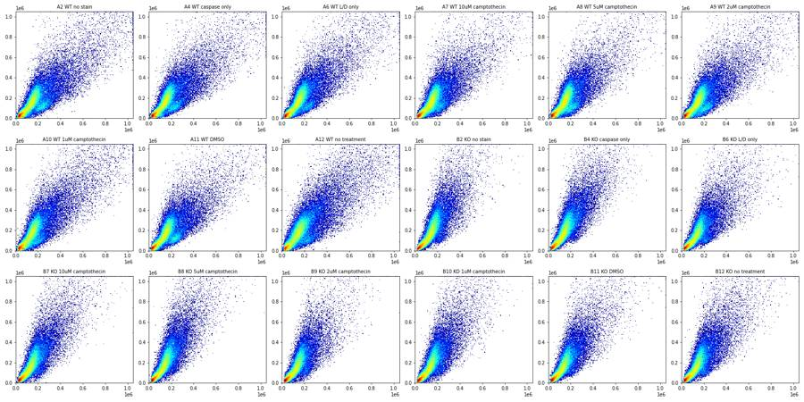
15
tool call · Read
{
"file_path": "/task/work/p_scatterlog.png"
}16
tool output
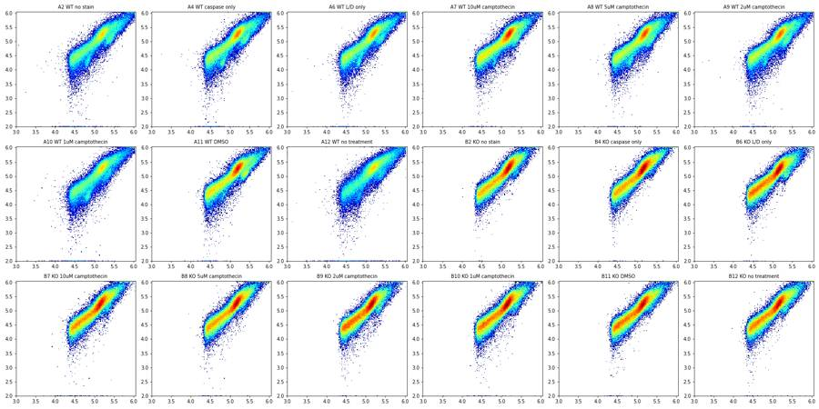
17
tool call · Read
{
"file_path": "/task/work/p_time.png"
}18
tool output
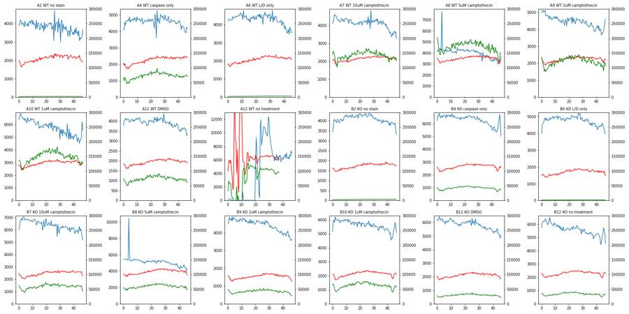
20
tool call · Read
{
"file_path": "/task/work/p_fl.png"
}21
tool output
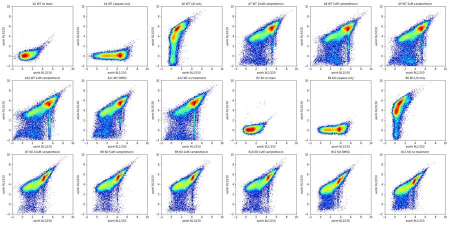
22
tool call · Read
{
"file_path": "/task/work/p_fscah.png"
}23
tool output
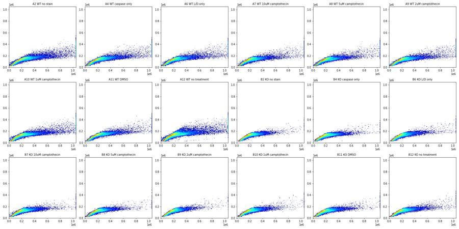
25
tool call · Bash
cd /task/work; cat > plots2.py <<'EOF'
import pickle, numpy as np, pandas as pd
import matplotlib; matplotlib.use('Agg'); import matplotlib.pyplot as plt
D=pickle.load(open('D.pkl','rb'))
lay = pd.read_csv('/task/inputs/plate_layout.csv').set_index('well')
wells=list(lay.index)
def asinh(x,c=150): return np.arcsinh(x/c)
def grid(fn,name,n=60000):
fig,axs=plt.subplots(3,6,figsize=(24,12))
for ax,w in zip(axs.ravel(),wells):
df=D[w].sample(n,random_state=0)
fn(ax,df,D[w]); ax.set_title(w+' '+lay.loc[w,'sample'],fontsize=10)
plt.tight_layout(); plt.savefig(name,dpi=70); plt.close()
L=matplotlib.colors.LogNorm()
def a(ax,df,full):
ax.hist2d(np.log10(df['FSC-A'].clip(1e3)),asinh(df['RL3-A']),bins=200,range=[[4,6.05],[-2,10]],norm=L,cmap='jet'); ax.set_xlabel('log FSC-A'); ax.set_ylabel('asinh RL3')
grid(a,'p_fsc_rl3.png')
def b(ax,df,full):
ax.hist2d(np.log10(df['FSC-A'].clip(1e3)),asinh(df['BL1-A']),bins=200,range=[[4,6.05],[-2,10]],norm=L,cmap='jet'); ax.set_xlabel('log FSC-A'); ax.set_ylabel('asinh BL1')
grid(b,'p_fsc_bl1.png')
def c(ax,df,full):
ax.hist2d(df['Time'],asinh(df['BL1-A']),bins=[96,200],range=[[0,48],[-2,10]],norm=L,cmap='jet')
grid(c,'p_time_bl1.png',n=150000)
def d(ax,df,full):
ax.hist2d(df['Time'],asinh(df['RL3-A']),bins=[96,200],range=[[0,48],[-2,10]],norm=L,cmap='jet')
grid(d,'p_time_rl3.png',n=150000)
def e(ax,df,full):
ax.hist2d(df['Time'],np.log10(df['FSC-A'].clip(1e3)),bins=[96,200],range=[[0,48],[4,6.05]],norm=L,cmap='jet')
grid(e,'p_time_fsc.png',n=150000)
EOF
python3 -I plots2.py26
tool output
(Bash completed with no output)
27
agent
Still exploring the raw data before drawing gates — checking fluorescence against scatter and time to pin down the odd A12 flow profile and a strange narrow BL1 stripe.
28
tool call · Read
{
"file_path": "/task/work/p_time_bl1.png"
}29
tool output
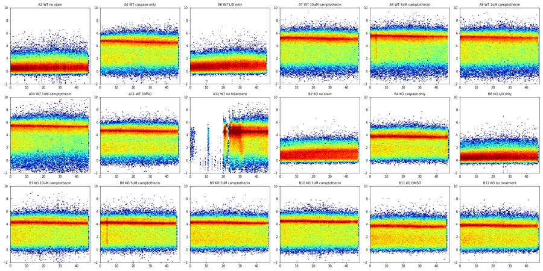
30
tool call · Read
{
"file_path": "/task/work/p_time_fsc.png"
}31
tool output
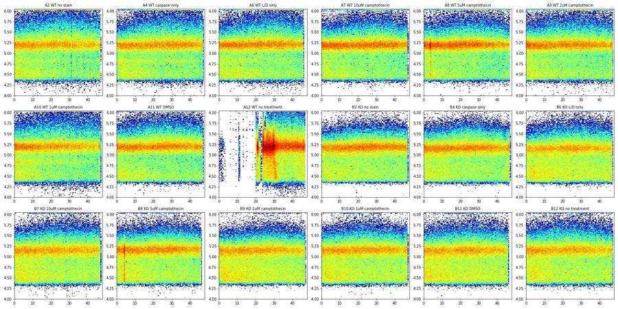
33
tool call · Read
{
"file_path": "/task/work/p_fsc_rl3.png"
}34
tool output
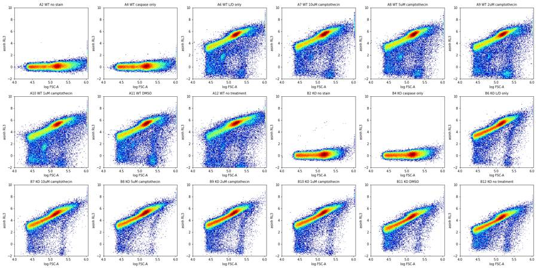
35
tool call · Read
{
"file_path": "/task/work/p_fsc_bl1.png"
}36
tool output
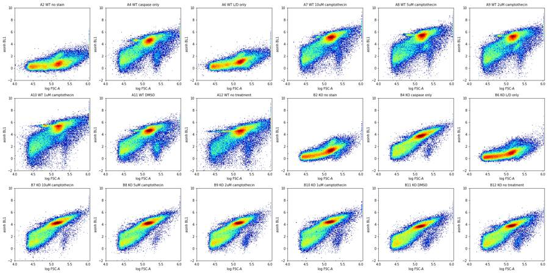
38
tool call · Bash
cd /task/work; cat > plots3.py <<'EOF'
import pickle, numpy as np, pandas as pd
import matplotlib; matplotlib.use('Agg'); import matplotlib.pyplot as plt
D=pickle.load(open('D.pkl','rb'))
lay = pd.read_csv('/task/inputs/plate_layout.csv').set_index('well')
wells=list(lay.index)
def asinh(x,c=150): return np.arcsinh(x/c)
def grid(fn,name,n=80000):
fig,axs=plt.subplots(3,6,figsize=(24,12))
for ax,w in zip(axs.ravel(),wells):
df=D[w].sample(n,random_state=0)
fn(ax,df,D[w]); ax.set_title(w+' '+lay.loc[w,'sample'],fontsize=10)
plt.tight_layout(); plt.savefig(name,dpi=70); plt.close()
L=matplotlib.colors.LogNorm()
def a(ax,df,full):
ax.hist2d(df['FSC-A'],df['FSC-W'],bins=200,range=[[0,1.05e6],[0,400]],norm=L,cmap='jet'); ax.set_xlabel('FSC-A'); ax.set_ylabel('FSC-W')
grid(a,'p_fscw.png')
def b(ax,df,full):
ax.hist2d(df['SSC-A'],df['SSC-H'],bins=200,range=[[0,1.05e6],[0,1.05e6]],norm=L,cmap='jet'); ax.set_xlabel('SSC-A'); ax.set_ylabel('SSC-H')
grid(b,'p_sscah.png')
def c(ax,df,full):
ax.hist2d(df['SSC-A'],df['SSC-W'],bins=200,range=[[0,1.05e6],[0,400]],norm=L,cmap='jet'); ax.set_xlabel('SSC-A'); ax.set_ylabel('SSC-W')
grid(c,'p_sscw.png')
def d(ax,df,full):
ax.hist2d(df['FSC-A'],df['FSC-H'],bins=200,range=[[0,4e5],[0,3e5]],norm=L,cmap='jet'); ax.set_xlabel('FSC-A'); ax.set_ylabel('FSC-H')
grid(d,'p_fscah_zoom.png')
for w in wells:
df=D[w]; n=len(df)
print(w, 'satFSC-A %.2f%% satSSC-A %.2f%% satBL1 %.3f%% satRL3 %.3f%% FSC-H max %.0f SSC-H max %.0f W max %.0f %.0f'%(100*(df['FSC-A']>=1048575).mean(),100*(df['SSC-A']>=1048575).mean(),100*(df['BL1-A']>=1048575).mean(),100*(df['RL3-A']>=1048575).mean(), df['FSC-H'].max(), df['SSC-H'].max(), df['FSC-W'].max(), df['SSC-W'].max()))
EOF
python3 -I plots3.py39
tool output
A2 satFSC-A 1.27% satSSC-A 1.60% satBL1 0.000% satRL3 0.000% FSC-H max 584362 SSC-H max 1048575 W max 375 375 A4 satFSC-A 0.69% satSSC-A 0.96% satBL1 0.000% satRL3 0.000% FSC-H max 577040 SSC-H max 1048575 W max 375 375 A6 satFSC-A 0.78% satSSC-A 1.14% satBL1 0.000% satRL3 0.002% FSC-H max 530668 SSC-H max 1048575 W max 375 375 A7 satFSC-A 0.34% satSSC-A 0.59% satBL1 0.000% satRL3 0.000% FSC-H max 537848 SSC-H max 1048575 W max 375 375 A8 satFSC-A 0.49% satSSC-A 0.80% satBL1 0.001% satRL3 0.001% FSC-H max 513133 SSC-H max 1048575 W max 375 375 A9 satFSC-A 0.60% satSSC-A 0.87% satBL1 0.000% satRL3 0.002% FSC-H max 523924 SSC-H max 1048575 W max 375 375 A10 satFSC-A 1.27% satSSC-A 1.78% satBL1 0.005% satRL3 0.001% FSC-H max 622983 SSC-H max 1048575 W max 375 375 A11 satFSC-A 0.35% satSSC-A 0.60% satBL1 0.000% satRL3 0.000% FSC-H max 554545 SSC-H max 1048575 W max 375 375 A12 satFSC-A 1.42% satSSC-A 2.03% satBL1 0.000% satRL3 0.001% FSC-H max 535387 SSC-H max 1048575 W max 375 375 B2 satFSC-A 0.04% satSSC-A 0.45% satBL1 0.000% satRL3 0.000% FSC-H max 456266 SSC-H max 1048575 W max 375 375 B4 satFSC-A 0.04% satSSC-A 0.54% satBL1 0.000% satRL3 0.000% FSC-H max 452652 SSC-H max 1048575 W max 375 375 B6 satFSC-A 0.09% satSSC-A 0.43% satBL1 0.000% satRL3 0.001% FSC-H max 483962 SSC-H max 1048575 W max 375 375 B7 satFSC-A 0.10% satSSC-A 0.61% satBL1 0.000% satRL3 0.005% FSC-H max 463504 SSC-H max 1048575 W max 375 375 B8 satFSC-A 0.09% satSSC-A 0.68% satBL1 0.000% satRL3 0.004% FSC-H max 487653 SSC-H max 1048575 W max 375 375 B9 satFSC-A 0.06% satSSC-A 0.35% satBL1 0.000% satRL3 0.002% FSC-H max 491899 SSC-H max 1048575 W max 375 375 B10 satFSC-A 0.08% satSSC-A 0.53% satBL1 0.000% satRL3 0.001% FSC-H max 520131 SSC-H max 1048575 W max 375 375 B11 satFSC-A 0.09% satSSC-A 0.55% satBL1 0.000% satRL3 0.000% FSC-H max 505696 SSC-H max 1048575 W max 375 375 B12 satFSC-A 0.14% satSSC-A 0.75% satBL1 0.000% satRL3 0.000% FSC-H max 485959 SSC-H max 1048575 W max 375 375
40
tool call · Read
{
"file_path": "/task/work/p_fscw.png"
}41
tool output
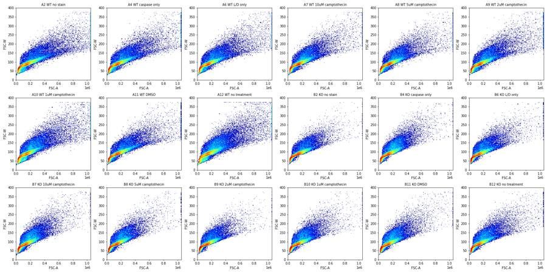
42
tool call · Read
{
"file_path": "/task/work/p_fscah_zoom.png"
}43
tool output
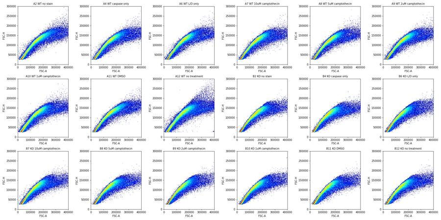
45
tool call · Bash
cd /task/work; cat > plots4.py <<'EOF'
import pickle, numpy as np, pandas as pd
import matplotlib; matplotlib.use('Agg'); import matplotlib.pyplot as plt
D=pickle.load(open('D.pkl','rb'))
lay = pd.read_csv('/task/inputs/plate_layout.csv').set_index('well')
wells=list(lay.index)
def asinh(x,c=150): return np.arcsinh(x/c)
L=matplotlib.colors.LogNorm()
# 1D RL3 hist for FSC bands
fig,axs=plt.subplots(3,6,figsize=(24,12))
for ax,w in zip(axs.ravel(),wells):
df=D[w]
for lo,hi,c in [(25e3,50e3,'gray'),(50e3,100e3,'orange'),(100e3,200e3,'b'),(200e3,500e3,'g')]:
m=(df['FSC-A']>=lo)&(df['FSC-A']<hi)
ax.hist(asinh(df.loc[m,'RL3-A']),bins=240,range=(-3,9),histtype='step',color=c,label='%dk-%dk n=%d'%(lo/1e3,hi/1e3,m.sum()))
ax.set_yscale('log'); ax.legend(fontsize=6); ax.set_title(w+' '+lay.loc[w,'sample'],fontsize=10); ax.set_xlabel('asinh RL3/150')
plt.tight_layout(); plt.savefig('p_rl3_1d.png',dpi=70); plt.close()
fig,axs=plt.subplots(3,6,figsize=(24,12))
for ax,w in zip(axs.ravel(),wells):
df=D[w]
for lo,hi,c in [(25e3,50e3,'gray'),(50e3,100e3,'orange'),(100e3,200e3,'b'),(200e3,500e3,'g')]:
m=(df['FSC-A']>=lo)&(df['FSC-A']<hi)
ax.hist(asinh(df.loc[m,'BL1-A']),bins=240,range=(-3,9),histtype='step',color=c,label='%dk-%dk n=%d'%(lo/1e3,hi/1e3,m.sum()))
ax.set_yscale('log'); ax.legend(fontsize=6); ax.set_title(w+' '+lay.loc[w,'sample'],fontsize=10); ax.set_xlabel('asinh BL1/150')
plt.tight_layout(); plt.savefig('p_bl1_1d.png',dpi=70); plt.close()
# Zombie-low events: BL1 vs FSC and scatter
fig,axs=plt.subplots(3,6,figsize=(24,12))
for ax,w in zip(axs.ravel(),wells):
df=D[w]; m=df['RL3-A']<600
ax.hist2d(np.log10(df.loc[m,'FSC-A'].clip(1e3)),asinh(df.loc[m,'BL1-A']),bins=150,range=[[4.3,6.05],[-2,9]],norm=L,cmap='jet'); ax.set_title(w+' '+lay.loc[w,'sample']+' RL3<600 n=%d'%m.sum(),fontsize=10)
plt.tight_layout(); plt.savefig('p_zneg_fsc_bl1.png',dpi=70); plt.close()
fig,axs=plt.subplots(3,6,figsize=(24,12))
for ax,w in zip(axs.ravel(),wells):
df=D[w]; m=df['RL3-A']<600
ax.hist2d(np.log10(df.loc[m,'FSC-A'].clip(1e3)),np.log10(df.loc[m,'SSC-A'].clip(1e3)),bins=150,range=[[4.3,6.05],[3.5,6.05]],norm=L,cmap='jet'); ax.set_title(w+' '+lay.loc[w,'sample']+' RL3<600',fontsize=10)
plt.tight_layout(); plt.savefig('p_zneg_scatter.png',dpi=70); plt.close()
EOF
python3 -I plots4.py46
tool output
(Bash completed with no output)
47
agent
Checking where the Zombie-negative (live) boundary sits and what the Zombie-low events look like, so I can place the live and caspase gates.
48
tool call · Read
{
"file_path": "/task/work/p_rl3_1d.png"
}49
tool output
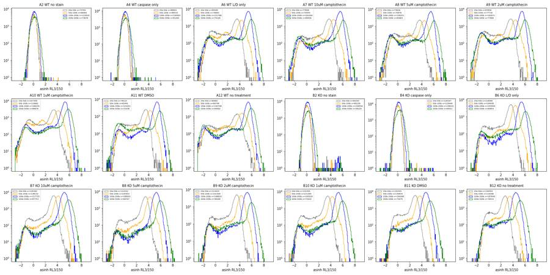
50
tool call · Read
{
"file_path": "/task/work/p_zneg_fsc_bl1.png"
}51
tool output
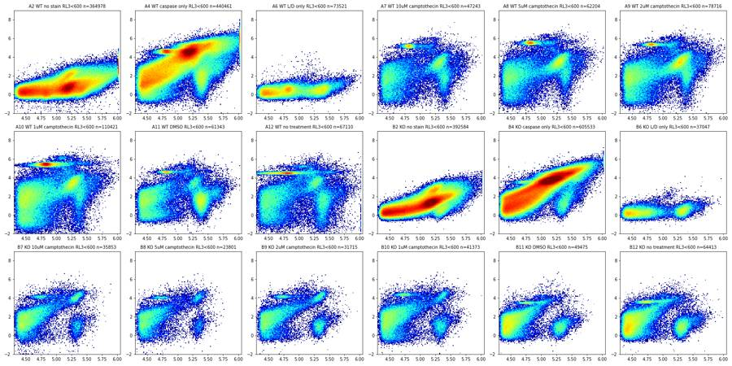
52
tool call · Read
{
"file_path": "/task/work/p_zneg_scatter.png"
}53
tool output
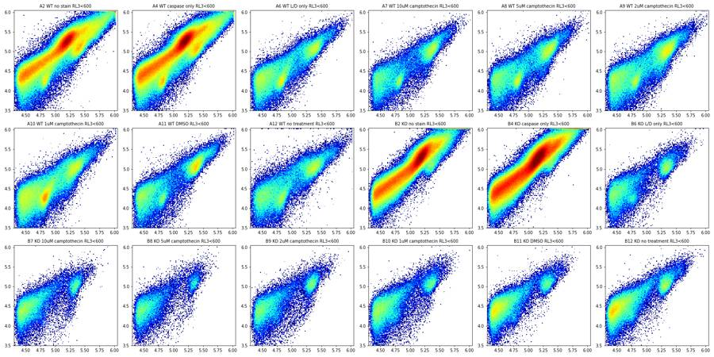
55
tool call · Bash
cd /task/work; cat > q1.py <<'EOF'
import pickle, numpy as np, pandas as pd
import matplotlib; matplotlib.use('Agg'); import matplotlib.pyplot as plt
D=pickle.load(open('D.pkl','rb'))
lay = pd.read_csv('/task/inputs/plate_layout.csv').set_index('well')
wells=list(lay.index)
def asinh(x,c=150): return np.arcsinh(x/c)
L=matplotlib.colors.LogNorm()
fig,axs=plt.subplots(3,6,figsize=(24,12))
for ax,w in zip(axs.ravel(),wells):
df=D[w]
lf=np.log10(df['FSC-A'].clip(1e3))
ax.hist(lf,bins=170,range=(4.3,6.03),histtype='step',color='k',label='all')
m=df['RL3-A']<500
if lay.loc[w,'treatment'] not in ('no stain','caspase only'):
ax.hist(lf[m],bins=170,range=(4.3,6.03),histtype='step',color='g',label='RL3<500')
ax.set_title(w+' '+lay.loc[w,'sample'],fontsize=10); ax.legend(fontsize=7); ax.set_yscale('log')
plt.tight_layout(); plt.savefig('p_fsc_1d.png',dpi=70); plt.close()
# stripe: find BL1 mode among low-SSC cluster
for w in wells:
df=D[w]
m=(df['FSC-A'].between(45e3,100e3))&(df['SSC-A'].between(8e3,30e3))
sub=df[m]
a=asinh(sub['BL1-A']); h,e=np.histogram(a,bins=200,range=(-1,8)); pk=e[h.argmax()]
inpk=(a>pk-0.2)&(a<pk+0.25)
print(w, lay.loc[w,'sample'].ljust(22),'lowSSC cluster n=%d (%.2f%%) BL1 mode asinh %.2f (raw %.0f) frac in peak %.2f RL3 med %.0f; rCV of peak %.1f%%'%(m.sum(),100*m.mean(),pk,150*np.sinh(pk),inpk.mean(), sub.loc[inpk,'RL3-A'].median(), 100*sub.loc[inpk,'BL1-A'].std()/sub.loc[inpk,'BL1-A'].mean()))
EOF
python3 -I q1.py56
tool output
A2 WT no stain lowSSC cluster n=16760 (4.58%) BL1 mode asinh -0.01 (raw -2) frac in peak 0.50 RL3 med 0; rCV of peak 381.2% A4 WT caspase only lowSSC cluster n=23076 (5.23%) BL1 mode asinh 4.71 (raw 8370) frac in peak 0.36 RL3 med 0; rCV of peak 9.5% A6 WT L/D only lowSSC cluster n=18818 (4.56%) BL1 mode asinh 0.40 (raw 61) frac in peak 0.45 RL3 med 312; rCV of peak 31.6% A7 WT 10uM camptothecin lowSSC cluster n=12528 (3.17%) BL1 mode asinh 5.12 (raw 12550) frac in peak 0.32 RL3 med 373; rCV of peak 10.9% A8 WT 5uM camptothecin lowSSC cluster n=15895 (4.13%) BL1 mode asinh 5.48 (raw 17988) frac in peak 0.40 RL3 med 338; rCV of peak 10.4% A9 WT 2uM camptothecin lowSSC cluster n=17185 (4.01%) BL1 mode asinh 5.30 (raw 15025) frac in peak 0.31 RL3 med 354; rCV of peak 9.5% A10 WT 1uM camptothecin lowSSC cluster n=31776 (5.75%) BL1 mode asinh 5.34 (raw 15716) frac in peak 0.50 RL3 med 210; rCV of peak 10.4% A11 WT DMSO lowSSC cluster n=11845 (3.14%) BL1 mode asinh 4.58 (raw 7313) frac in peak 0.27 RL3 med 360; rCV of peak 8.4% A12 WT no treatment lowSSC cluster n=15414 (3.77%) BL1 mode asinh 4.44 (raw 6389) frac in peak 0.51 RL3 med 203; rCV of peak 7.2% B2 KO no stain lowSSC cluster n=8403 (2.14%) BL1 mode asinh 0.48 (raw 76) frac in peak 0.49 RL3 med 1; rCV of peak 26.5% B4 KO caspase only lowSSC cluster n=12583 (2.08%) BL1 mode asinh 2.51 (raw 917) frac in peak 0.35 RL3 med 1; rCV of peak 12.4% B6 KO L/D only lowSSC cluster n=14048 (3.07%) BL1 mode asinh 0.40 (raw 61) frac in peak 0.50 RL3 med 3484; rCV of peak 32.6% B7 KO 10uM camptothecin lowSSC cluster n=13772 (2.25%) BL1 mode asinh 3.23 (raw 1893) frac in peak 0.32 RL3 med 2927; rCV of peak 12.8% B8 KO 5uM camptothecin lowSSC cluster n=9982 (2.02%) BL1 mode asinh 2.96 (raw 1443) frac in peak 0.34 RL3 med 3229; rCV of peak 12.5% B9 KO 2uM camptothecin lowSSC cluster n=11312 (2.66%) BL1 mode asinh 3.14 (raw 1730) frac in peak 0.32 RL3 med 3356; rCV of peak 12.7% B10 KO 1uM camptothecin lowSSC cluster n=13811 (2.56%) BL1 mode asinh 3.37 (raw 2167) frac in peak 0.30 RL3 med 3376; rCV of peak 12.8% B11 KO DMSO lowSSC cluster n=13457 (2.40%) BL1 mode asinh 2.55 (raw 960) frac in peak 0.36 RL3 med 1819; rCV of peak 12.7% B12 KO no treatment lowSSC cluster n=13084 (2.43%) BL1 mode asinh 2.55 (raw 960) frac in peak 0.31 RL3 med 1478; rCV of peak 12.6%
58
tool call · Read
{
"file_path": "/task/work/p_fsc_1d.png"
}59
tool output
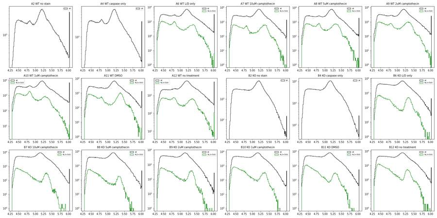
61
tool call · Bash
cd /task/work; cat > plots5.py <<'EOF'
import pickle, numpy as np, pandas as pd
import matplotlib; matplotlib.use('Agg'); import matplotlib.pyplot as plt
D=pickle.load(open('D.pkl','rb'))
lay = pd.read_csv('/task/inputs/plate_layout.csv').set_index('well')
wells=list(lay.index)
L=matplotlib.colors.LogNorm()
cells=np.array([(100e3,45e3),(100e3,330e3),(230e3,620e3),(450e3,800e3),(650e3,800e3),(650e3,220e3),(300e3,70e3),(160e3,45e3)])
sing=np.array([(90e3,75e3),(90e3,112e3),(150e3,162e3),(230e3,205e3),(400e3,235e3),(660e3,250e3),(660e3,205e3),(400e3,165e3),(300e3,146e3),(200e3,118e3),(140e3,88e3)])
np.save('cells_poly.npy',cells); np.save('sing_poly.npy',sing)
from matplotlib.path import Path
for nm,sel in [('all',None),('zneg','z')]:
fig,axs=plt.subplots(3,6,figsize=(24,12))
for ax,w in zip(axs.ravel(),wells):
df=D[w]
if sel: df=df[df['RL3-A']<500]
ax.hist2d(df['FSC-A'],df['SSC-A'],bins=200,range=[[0,8e5],[0,9e5]],norm=L,cmap='jet')
ax.plot(*np.vstack([cells,cells[:1]]).T,'k-'); ax.set_title(w+' '+lay.loc[w,'sample'],fontsize=10)
plt.tight_layout(); plt.savefig('p_cells_%s.png'%nm,dpi=70); plt.close()
fig,axs=plt.subplots(3,6,figsize=(24,12))
for ax,w in zip(axs.ravel(),wells):
df=D[w]; m=Path(cells).contains_points(df[['FSC-A','SSC-A']].values); df=df[m]
ax.hist2d(df['FSC-A'],df['FSC-H'],bins=200,range=[[0,7e5],[0,3.5e5]],norm=L,cmap='jet')
ax.plot(*np.vstack([sing,sing[:1]]).T,'k-');
s=Path(sing).contains_points(df[['FSC-A','FSC-H']].values)
ax.set_title(w+' '+lay.loc[w,'sample']+' cells %.1f%% sing %.1f%%'%(100*m.mean(),100*s.mean()),fontsize=10)
plt.tight_layout(); plt.savefig('p_sing.png',dpi=70); plt.close()
EOF
python3 -I plots5.py62
tool output
(Bash completed with no output)
63
agent
Drafting the scatter (cells) and singlet gate polygons and checking them against every well before fixing the live and caspase thresholds.
64
tool call · Read
{
"file_path": "/task/work/p_cells_all.png"
}65
tool output
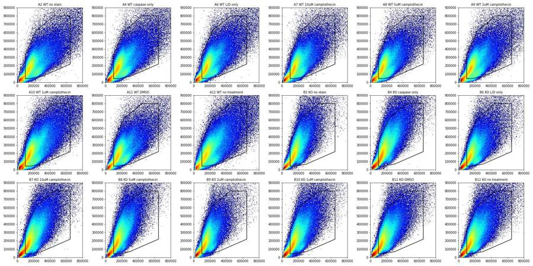
66
tool call · Read
{
"file_path": "/task/work/p_cells_zneg.png"
}67
tool output
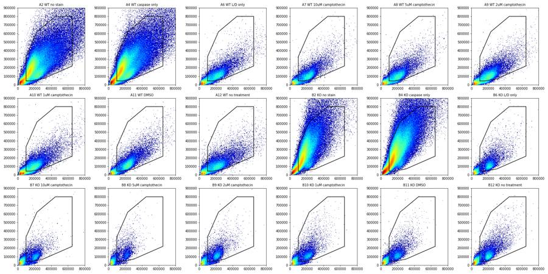
68
tool call · Read
{
"file_path": "/task/work/p_sing.png"
}69
tool output
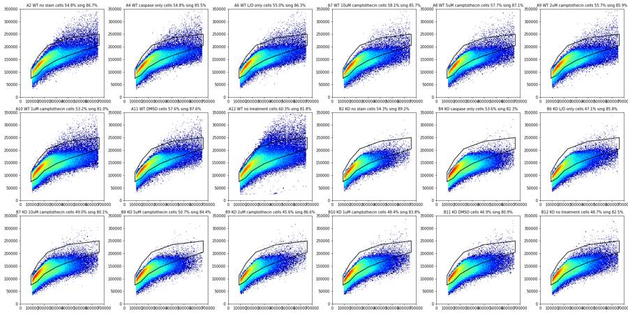
71
tool call · Bash
cd /task/work; cat > q2.py <<'EOF'
import pickle, numpy as np, pandas as pd
import matplotlib; matplotlib.use('Agg'); import matplotlib.pyplot as plt
from matplotlib.path import Path
D=pickle.load(open('D.pkl','rb'))
lay = pd.read_csv('/task/inputs/plate_layout.csv').set_index('well')
wells=list(lay.index)
def asinh(x,c=150): return np.arcsinh(x/c)
L=matplotlib.colors.LogNorm()
cells=np.load('cells_poly.npy'); sing=np.load('sing_poly.npy')
S={}
for w in wells:
df=D[w]; m=Path(cells).contains_points(df[['FSC-A','SSC-A']].values)&Path(sing).contains_points(df[['FSC-A','FSC-H']].values)
S[w]=df[m]
pickle.dump(S,open('S.pkl','wb'))
for w in ['A2','A4','B2','B4']:
print(w,'RL3 in singlets pct 1,50,99,99.5,99.9:',np.percentile(S[w]['RL3-A'],[1,50,99,99.5,99.9]).round(0))
for w in wells:
s=S[w]; print(w, lay.loc[w,'sample'].ljust(22), 'n sing',len(s),' RL3<300 %.2f%% <500 %.2f%% <800 %.2f%% <1500 %.2f%% <3000 %.2f%%'%tuple(100*(s['RL3-A']<t).mean() for t in (300,500,800,1500,3000)))
fig,axs=plt.subplots(3,6,figsize=(24,12))
for ax,w in zip(axs.ravel(),wells):
s=S[w]
ax.hist2d(asinh(s['BL1-A']),asinh(s['RL3-A']),bins=200,range=[[-2,9],[-3,9]],norm=L,cmap='jet')
for t in (300,500,800): ax.axhline(asinh(t),color='k',lw=.5)
ax.set_title(w+' '+lay.loc[w,'sample'],fontsize=10)
plt.tight_layout(); plt.savefig('p_sing_fl.png',dpi=70); plt.close()
fig,axs=plt.subplots(3,6,figsize=(24,12))
for ax,w in zip(axs.ravel(),wells):
s=S[w]
for t,c in ((300,'g'),(500,'b'),(800,'r')):
l=s[s['RL3-A']<t]
ax.hist(asinh(l['BL1-A']),bins=110,range=(-2,9),histtype='step',color=c,label='RL3<%d n=%d'%(t,len(l)))
l=s[s['RL3-A'].between(800,3000)]
ax.hist(asinh(l['BL1-A']),bins=110,range=(-2,9),histtype='step',color='orange',label='RL3 800-3000 n=%d'%(len(l)))
ax.legend(fontsize=7); ax.set_title(w+' '+lay.loc[w,'sample'],fontsize=10)
for t in (600,1000,1500): ax.axvline(asinh(t),color='k',lw=.5)
plt.tight_layout(); plt.savefig('p_live_bl1.png',dpi=70); plt.close()
EOF
python3 -I q2.py72
tool output
A2 RL3 in singlets pct 1,50,99,99.5,99.9: [-106. 24. 164. 183. 225.] A4 RL3 in singlets pct 1,50,99,99.5,99.9: [-105. 24. 163. 181. 221.] B2 RL3 in singlets pct 1,50,99,99.5,99.9: [-100. 26. 171. 191. 244.] B4 RL3 in singlets pct 1,50,99,99.5,99.9: [-101. 25. 168. 187. 230.] A2 WT no stain n sing 173833 RL3<300 99.99% <500 100.00% <800 100.00% <1500 100.00% <3000 100.00% A4 WT caspase only n sing 206352 RL3<300 99.99% <500 100.00% <800 100.00% <1500 100.00% <3000 100.00% A6 WT L/D only n sing 195932 RL3<300 8.56% <500 9.63% <800 10.93% <1500 13.18% <3000 15.51% A7 WT 10uM camptothecin n sing 196820 RL3<300 7.21% <500 7.94% <800 8.75% <1500 10.09% <3000 11.85% A8 WT 5uM camptothecin n sing 193523 RL3<300 9.14% <500 10.10% <800 11.17% <1500 12.97% <3000 14.98% A9 WT 2uM camptothecin n sing 204951 RL3<300 11.81% <500 12.83% <800 14.00% <1500 15.96% <3000 18.24% A10 WT 1uM camptothecin n sing 238452 RL3<300 9.12% <500 10.21% <800 11.52% <1500 13.76% <3000 16.17% A11 WT DMSO n sing 190146 RL3<300 10.79% <500 11.95% <800 13.25% <1500 15.32% <3000 17.55% A12 WT no treatment n sing 201923 RL3<300 9.00% <500 9.91% <800 11.07% <1500 13.03% <3000 15.12% B2 KO no stain n sing 190018 RL3<300 99.96% <500 99.97% <800 99.97% <1500 99.97% <3000 99.97% B4 KO caspase only n sing 267467 RL3<300 99.99% <500 100.00% <800 100.00% <1500 100.00% <3000 100.00% B6 KO L/D only n sing 184823 RL3<300 4.66% <500 5.34% <800 6.16% <1500 7.59% <3000 9.40% B7 KO 10uM camptothecin n sing 240063 RL3<300 2.21% <500 2.59% <800 3.05% <1500 3.85% <3000 5.11% B8 KO 5uM camptothecin n sing 210962 RL3<300 1.49% <500 1.76% <800 2.06% <1500 2.61% <3000 3.35% B9 KO 2uM camptothecin n sing 168093 RL3<300 3.79% <500 4.37% <800 5.07% <1500 6.23% <3000 7.60% B10 KO 1uM camptothecin n sing 218743 RL3<300 2.97% <500 3.47% <800 4.07% <1500 5.11% <3000 6.49% B11 KO DMSO n sing 212735 RL3<300 2.75% <500 3.41% <800 4.21% <1500 5.45% <3000 7.16% B12 KO no treatment n sing 216297 RL3<300 4.33% <500 5.37% <800 6.47% <1500 8.00% <3000 10.64%
73
tool call · Read
{
"file_path": "/task/work/p_sing_fl.png"
}74
tool output
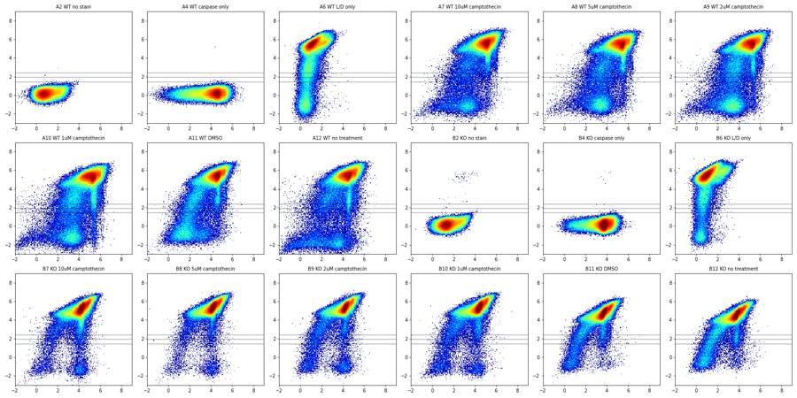
75
tool call · Read
{
"file_path": "/task/work/p_live_bl1.png"
}76
tool output
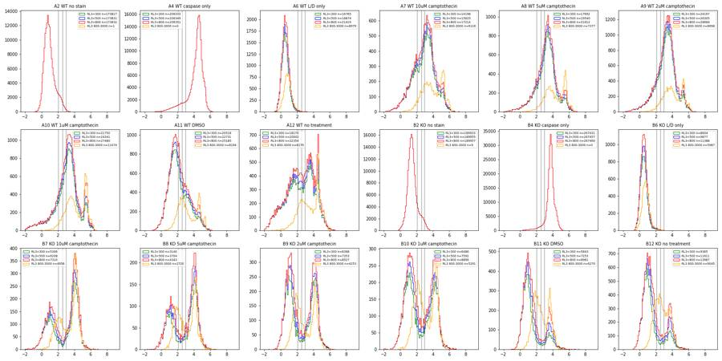
78
tool call · Bash
cd /task/work; cat > q3.py <<'EOF'
import pickle, numpy as np, pandas as pd
import matplotlib; matplotlib.use('Agg'); import matplotlib.pyplot as plt
S=pickle.load(open('S.pkl','rb'))
lay = pd.read_csv('/task/inputs/plate_layout.csv').set_index('well')
wells=list(lay.index)
def asinh(x,c=150): return np.arcsinh(x/c)
L=matplotlib.colors.LogNorm()
for w in ['A6','B6']:
l=S[w][S[w]['RL3-A']<500]
print(w,'FMO live BL1 pct 50,95,99,99.5,99.9',np.percentile(l['BL1-A'],[50,95,99,99.5,99.9]).round(0))
for nm,f in [('fsc_ssc',lambda l:(l['FSC-A'],l['SSC-A'],[[0,5e5],[0,4e5]])),('fsc_bl1',lambda l:(l['FSC-A'],asinh(l['BL1-A']),[[0,5e5],[-2,8]])),('ssc_bl1',lambda l:(l['SSC-A'],asinh(l['BL1-A']),[[0,4e5],[-2,8]]))]:
fig,axs=plt.subplots(3,6,figsize=(24,12))
for ax,w in zip(axs.ravel(),wells):
l=S[w][S[w]['RL3-A']<500]
x,y,r=f(l)
ax.hist2d(x,y,bins=120,range=r,norm=L,cmap='jet'); ax.set_title(w+' '+lay.loc[w,'sample']+' live',fontsize=10)
plt.tight_layout(); plt.savefig('p_live_%s.png'%nm,dpi=70); plt.close()
EOF
python3 -I q3.py79
tool output
A6 FMO live BL1 pct 50,95,99,99.5,99.9 [ 85. 269. 490. 692. 2307.] B6 FMO live BL1 pct 50,95,99,99.5,99.9 [ 80. 253. 578. 817. 1333.]
80
tool call · Read
{
"file_path": "/task/work/p_live_fsc_bl1.png"
}81
tool output
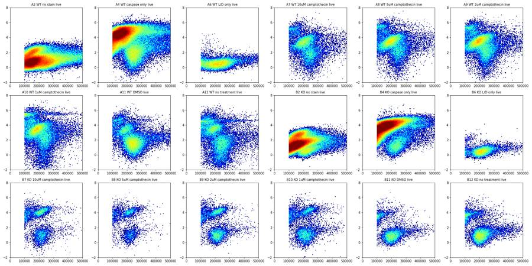
82
tool call · Read
{
"file_path": "/task/work/p_live_ssc_bl1.png"
}83
tool output
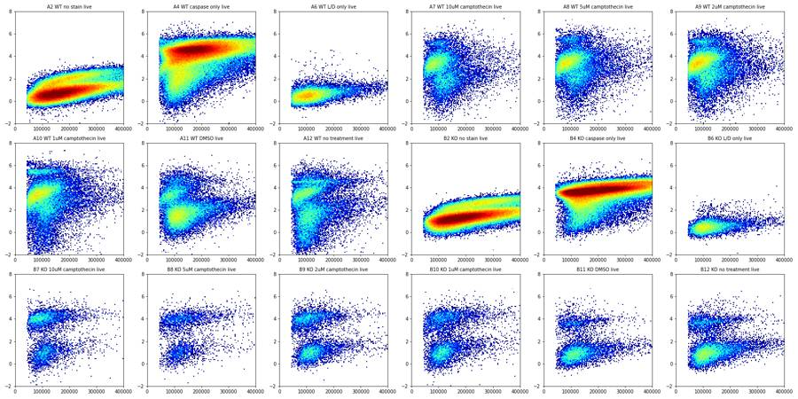
85
tool call · Bash
cd /task/work; cat > q4.py <<'EOF'
import pickle, numpy as np, pandas as pd
from matplotlib.path import Path
D=pickle.load(open('D.pkl','rb'))
lay = pd.read_csv('/task/inputs/plate_layout.csv').set_index('well')
wells=list(lay.index)
cells=np.load('cells_poly.npy'); sing=np.load('sing_poly.npy')
np.set_printoptions(linewidth=250)
for w in wells:
df=D[w]; t=df['Time'].values
h,e=np.histogram(t,bins=np.arange(0,49,1.0))
last=int(np.floor(t.max()))
hh=h[:last] # full bins
print(w, lay.loc[w,'sample'], 'tmax %.2f'%t.max(), 'rate/s med %d min %d max %d'%(np.median(hh),hh.min(),hh.max()), 'max gap between events %.3fs'%np.diff(np.sort(t)).max())
print(' ',h)
# A12 detail
df=D['A12']
m=Path(cells).contains_points(df[['FSC-A','SSC-A']].values); s=m&Path(sing).contains_points(df[['FSC-A','FSC-H']].values)
for lo,hi in [(0,20),(20,24),(24,33),(33,40),(40,48)]:
tt=df['Time'].between(lo,hi,inclusive='left'); n=tt.sum()
ss=df[tt&s]; live=ss[ss['RL3-A']<500]
print('A12 t %d-%d n=%d cells%% %.1f sing/cells %.1f live%% %.2f casp+%%live %.1f nlive %d medFSC %.0f BL1med(sing) %.0f RL3 med(sing) %.0f FSC-W==max %.2f%%'%(lo,hi,n,100*(tt&m).sum()/max(n,1),100*(tt&s).sum()/max((tt&m).sum(),1),100*len(live)/max(len(ss),1),100*(live['BL1-A']>=1000).mean(),len(live),df.loc[tt,'FSC-A'].median(),ss['BL1-A'].median(),ss['RL3-A'].median(),100*(df.loc[tt,'FSC-W']>=374).mean()))
for w in ['A8','B8']:
df=D[w]; t=df['Time']
h,e=np.histogram(t,bins=np.arange(0,48,0.1)); i=h.argmax(); print(w,'peak 0.1s bin at t=%.1f count %d vs median %d'%(e[i],h[i],np.median(h)))
print(h[max(0,i-8):i+8])
EOF
python3 -I q4.py86
tool output
A2 WT no stain tmax 47.02 rate/s med 7948 min 6514 max 8559 max gap between events 0.056s
[7922 8559 8128 8236 8126 7978 8095 8240 8300 8442 8323 8036 8213 7768 8161 7901 7733 7732 7957 7764 8016 8074 8173 8172 7648 7320 8300 8335 8050 7739 8009 7145 8169 7948 7205 6966 7845 7181 7339 7158 7481 7226 7196 7127 6544 6514 7108 134]
A4 WT caspase only tmax 47.09 rate/s med 9483 min 8227 max 10043 max gap between events 0.052s
[ 8264 9078 9437 9574 9700 9415 9524 9638 9694 9580 9790 9524 9638 9556 9244 9340 9536 9369 9481 9644 9508 9483 9049 9655 9046 9627 9359 10043 9898 9676 9895 9767 9573 9512 9535 9259 9446 9431 9197 9100 9406
9176 8571 8789 8449 8227 8240 877]
A6 WT L/D only tmax 46.08 rate/s med 9116 min 7515 max 9741 max gap between events 0.020s
[8788 8908 8876 9118 9163 9245 9207 9437 9488 9550 9345 9399 9203 9200 9055 8864 8790 9298 8811 9470 9114 9423 9476 9302 9183 8837 9741 9343 9343 9002 9515 9504 9124 9011 9031 8914 8707 8746 8483 8640 8171 7864 7515 7655 7774 7546 545 0]
A7 WT 10uM camptothecin tmax 47.05 rate/s med 8532 min 7026 max 9212 max gap between events 0.016s
[8379 9212 9185 8947 8778 8565 8800 8777 8701 8761 8967 8727 8679 8671 8425 8261 8310 8333 8351 8390 8509 8398 8593 8607 8532 8657 8685 8506 8899 8542 8679 8713 8669 8491 8591 8489 8386 8393 8191 8148 7823 7535 7156 7127 7153 7456 7026 341]
A8 WT 5uM camptothecin tmax 46.89 rate/s med 8494 min 6222 max 12591 max gap between events 0.016s
[ 8458 8729 8875 12591 8580 8636 8712 8505 8619 8628 8429 8452 8316 8333 8639 8795 8704 8778 8783 8703 8533 8671 8689 8543 8526 8618 8734 8503 8485 8443 8080 8142 7874 7506 7591 7605 7613 7672 7099 6874 6702
6840 6965 6893 6222 6679 6625 0]
A9 WT 2uM camptothecin tmax 47.20 rate/s med 9108 min 7638 max 10328 max gap between events 0.018s
[10093 10328 10317 9751 9855 9495 9686 9362 9505 9565 9613 9531 9353 9093 8974 9298 8897 9106 8974 9356 9260 9540 9210 9319 9079 9161 9325 9255 9108 8962 9282 9036 8896 8641 8513 8626 8815 8498 8156 7869 8576
8297 8294 7830 7638 7912 9067 1937]
A10 WT 1uM camptothecin tmax 47.17 rate/s med 11801 min 9391 max 13883 max gap between events 0.037s
[12999 13883 13420 13092 13043 12846 12959 12786 12887 13096 12948 12586 12354 12349 12535 11370 12090 11780 12251 12163 11969 12202 11610 12478 11989 11631 11443 11898 11576 11653 10447 10910 11098 10950 10471 11635 10249 10770 10307 10142 10116
10514 10020 10041 9391 10010 11801 1832]
A11 WT DMSO tmax 47.09 rate/s med 8127 min 6752 max 8473 max gap between events 0.013s
[7868 8386 8319 8394 8116 8182 8274 8278 8278 8409 8446 8397 8333 7928 8118 8158 8041 7673 8023 8127 8225 8154 8260 8374 8350 8265 8324 8473 8412 8411 8198 8014 8011 7986 7934 7819 7522 7748 7680 7836 7435 7057 7434 7376 7511 7266 6752 645]
A12 WT no treatment tmax 46.93 rate/s med 12400 min 0 max 22923 max gap between events 1.745s
[ 372 447 217 48 1 0 47 54 0 50 757 500 3 71 37 28 55 0 63 74 13660 12763 5468 11100 20605 19646 22320 21113 19989 22923 21341 16971 14588 13514 12671 12611 13756 12583 12837 12217 13143
13898 13626 12785 13113 13577 13432 0]
B2 KO no stain tmax 47.08 rate/s med 8365 min 7065 max 8910 max gap between events 0.006s
[7126 8253 8158 8180 8114 8149 8345 8173 8365 8680 8690 8604 8614 8641 8642 8642 8583 8608 8711 8725 8857 8702 8712 8787 8847 8600 8763 8910 8696 8593 8433 8400 8255 8355 8165 8218 7914 8167 8180 8029 8142 7834 7842 7974 7955 7878 7065 519]
B4 KO caspase only tmax 47.09 rate/s med 13169 min 10957 max 13619 max gap between events 0.004s
[12916 13619 13290 13480 13331 13516 13374 13480 13534 13460 13467 13454 13476 13261 13169 13099 13061 13087 13220 13035 13172 13317 13372 13379 13417 13217 13384 13179 12972 13226 12989 12803 12676 12614 12408 12431 12581 12236 11911 11777 11226
11688 11278 10957 11397 13035 12011 688]
B6 KO L/D only tmax 47.04 rate/s med 9902 min 8155 max 10556 max gap between events 0.006s
[ 8578 9500 9902 9928 9795 9809 9948 10097 10112 10057 10204 10204 10197 10040 9903 9924 9815 9872 10025 9948 9947 10006 10367 10210 10148 10161 10193 10556 10144 10064 9760 9686 9828 9826 9708 9206 9318 9363 9411 9090 8918
8880 9027 9103 9330 8859 8155 343]
B7 KO 10uM camptothecin tmax 47.10 rate/s med 12993 min 10935 max 14304 max gap between events 0.014s
[12403 13761 14020 14304 14110 13946 13965 13870 13801 13547 13890 13844 13895 13319 13426 13443 13388 12666 13173 13495 13578 12940 13302 13349 13096 12993 12946 13026 12188 11965 12561 12677 12698 12742 12856 12527 12425 12075 12604 12473 12268
11806 12213 11956 12259 12392 10935 1058]
B8 KO 5uM camptothecin tmax 46.11 rate/s med 10816 min 8693 max 15521 max gap between events 0.016s
[11213 11478 11329 12653 15521 11021 11076 11264 11228 11243 11246 11102 10961 10804 10595 10384 10860 10880 10796 10769 10945 10828 10868 10543 10877 10907 10974 10652 11088 10975 10670 10638 10623 10172 10196 10020 10178 9939 10007 9492 9231
9348 9156 9858 9205 8693 929 0]
B9 KO 2uM camptothecin tmax 47.03 rate/s med 9332 min 7427 max 9932 max gap between events 0.006s
[9129 9827 9681 9682 9932 9718 9581 9451 9568 9699 9663 9782 9743 9443 9336 9416 9464 9399 9389 9283 9207 9529 9509 9317 9276 9289 9367 9336 9342 9332 8917 8877 8747 8714 8809 8674 8373 8316 8242 8129 8001 8099 7908 8299 7831 7477 7427 242]
B10 KO 1uM camptothecin tmax 47.06 rate/s med 11626 min 9447 max 12446 max gap between events 0.008s
[11073 12028 12446 12156 12253 11883 12090 12129 12112 12128 12211 12151 12011 11745 11750 11803 11693 11752 11497 11855 11663 11514 11626 11537 11364 11694 11692 11677 11293 11398 11508 11282 11218 10836 11055 11142 11209 10952 10748 10893 10887
10504 9926 9447 10211 11705 10670 689]
B11 KO DMSO tmax 46.10 rate/s med 12415 m
… [1,784 more characters not shown]88
agent
Flow anomalies are quantified (A12 had ~20 s of near-zero flow then a surge; A8/B8 had brief bursts). Now building the actual FlowKit gating strategy and computing counts.
89
tool call · Bash
cd /task/work; cat > build.py <<'EOF'
import flowkit as fk, numpy as np, pandas as pd, warnings, sys
warnings.filterwarnings('ignore')
lay = pd.read_csv('/task/inputs/plate_layout.csv')
FSC_LO = float(sys.argv[1]) if len(sys.argv)>1 else 125e3
RL3_T = float(sys.argv[2]) if len(sys.argv)>2 else 500.
BL1_T = float(sys.argv[3]) if len(sys.argv)>3 else 1000.
OUT = sys.argv[4] if len(sys.argv)>4 else None
def dim(ch, lo=None, hi=None):
return fk.Dimension(ch, compensation_ref='uncompensated', range_min=lo, range_max=hi)
gs = fk.GatingStrategy()
cells_v=[(FSC_LO,45e3),(FSC_LO,330e3+ (FSC_LO-100e3)*2.23),(230e3,620e3),(450e3,800e3),(650e3,800e3),(650e3,220e3),(300e3,70e3),(max(160e3,FSC_LO+35e3),45e3)]
sing_v=[(90e3,75e3),(90e3,112e3),(150e3,162e3),(230e3,205e3),(400e3,235e3),(660e3,250e3),(660e3,205e3),(400e3,165e3),(300e3,146e3),(200e3,118e3),(140e3,88e3)]
gs.add_gate(fk.gates.PolygonGate('cells',[dim('FSC-A'),dim('SSC-A')],cells_v),('root',))
gs.add_gate(fk.gates.PolygonGate('singlets',[dim('FSC-A'),dim('FSC-H')],sing_v),('root','cells'))
gs.add_gate(fk.gates.RectangleGate('live',[dim('RL3-A',None,RL3_T)]),('root','cells','singlets'))
gs.add_gate(fk.gates.RectangleGate('dead',[dim('RL3-A',RL3_T,None)]),('root','cells','singlets'))
gs.add_gate(fk.gates.RectangleGate('live_casp_pos',[dim('BL1-A',BL1_T,None)]),('root','cells','singlets','live'))
gs.add_gate(fk.gates.RectangleGate('live_casp_neg',[dim('BL1-A',None,BL1_T)]),('root','cells','singlets','live'))
gs.add_gate(fk.gates.RectangleGate('dead_casp_pos',[dim('BL1-A',BL1_T,None)]),('root','cells','singlets','dead'))
gs.add_gate(fk.gates.RectangleGate('singlets_casp_pos',[dim('BL1-A',BL1_T,None)]),('root','cells','singlets'))
if OUT:
with open(OUT,'wb') as f: fk.export_gatingml(gs,f)
gs = fk.parse_gating_xml(OUT)
roles={'cells':'cells','singlets':'singlets','live':'live','live_casp_pos':'marker_positive'}
rows=[]
for _,r in lay.iterrows():
s=fk.Sample('/task/inputs/raw/'+r.file, ignore_offset_error=True)
res=gs.gate_sample(s); rep=res.report
n={'all_events':s.event_count}
rows.append(dict(file=r.file,well=r.well,population='all_events',role='other',parent='none',count=s.event_count,pct_of_parent=''))
for gname,gpath in gs.get_gate_ids():
c=int(res.get_gate_membership(gname,gate_path=gpath).sum()); n[gname]=c
for gname,gpath in gs.get_gate_ids():
par=gpath[-1] if gpath[-1]!='root' else 'all_events'
rows.append(dict(file=r.file,well=r.well,population=gname,role=roles.get(gname,'other'),parent=par,count=n[gname],pct_of_parent=100*n[gname]/n[par] if n[par] else ''))
df=pd.DataFrame(rows)
if OUT: df.to_csv('/task/outputs/counts.csv',index=False)
p=df.pivot(index='well',columns='population',values='count').loc[lay.well]
p['samp']=lay.set_index('well')['sample']
p['cells%']=100*p.cells/p.all_events; p['sing%']=100*p.singlets/p.cells; p['live%']=100*p.live/p.singlets; p['casp+%live']=100*p.live_casp_pos/p.live; p['casp+%sing']=100*p.singlets_casp_pos/p.singlets; p['casp+%dead']=100*p.dead_casp_pos/p.dead
pd.set_option('display.width',250)
print('FSC_LO',FSC_LO,'RL3',RL3_T,'BL1',BL1_T)
print(p[['samp','all_events','cells','singlets','live','live_casp_pos','cells%','sing%','live%','casp+%live','casp+%sing','casp+%dead']].round(2).to_string())
EOF
python3 -I build.py 125000 500 1000 /task/outputs/gates.xml90
tool output
FSC_LO 125000.0 RL3 500.0 BL1 1000.0 population samp all_events cells singlets live live_casp_pos cells% sing% live% casp+%live casp+%sing casp+%dead well A2 WT no stain 365736 175279 150561 150559 3205 47.93 85.90 100.00 2.13 2.13 0.00 A4 WT caspase only 440820 209697 177104 177101 159720 47.57 84.46 100.00 90.19 90.19 100.00 A6 WT L/D only 412724 198297 169444 17412 44 48.05 85.45 10.28 0.25 2.30 2.54 A7 WT 10uM camptothecin 395514 197857 167102 14822 9012 50.03 84.46 8.87 60.80 95.61 99.00 A8 WT 5uM camptothecin 384992 192784 165676 18235 13425 50.07 85.94 11.01 73.62 96.48 99.31 A9 WT 2uM camptothecin 428254 207008 175476 24829 18221 48.34 84.77 14.15 73.39 95.42 99.06 A10 WT 1uM camptothecin 552590 254462 202884 22192 15206 46.05 79.73 10.94 68.52 95.66 98.99 A11 WT DMSO 377220 188900 163593 21952 6449 50.08 86.60 13.42 29.38 87.63 96.66 A12 WT no treatment 409074 214439 172180 18567 8616 52.42 80.29 10.78 46.40 92.01 97.52 B2 KO no stain 392795 176182 154950 154898 11856 44.85 87.95 99.97 7.65 7.67 67.31 B4 KO caspase only 605670 262002 208990 208982 199465 43.26 79.77 100.00 95.45 95.45 100.00 B6 KO L/D only 457465 171423 144248 9444 25 37.47 84.15 6.55 0.26 3.45 3.67 B7 KO 10uM camptothecin 612174 236360 181985 5567 3050 38.61 76.99 3.06 54.79 96.89 98.21 B8 KO 5uM camptothecin 493435 201160 165492 3300 1820 40.77 82.27 1.99 55.15 97.56 98.42 B9 KO 2uM camptothecin 425772 150919 127763 6774 2838 35.45 84.66 5.30 41.90 93.77 96.67 B10 KO 1uM camptothecin 539106 206900 168625 6936 2695 38.38 81.50 4.11 38.86 94.96 97.36 B11 KO DMSO 561171 204809 159656 6576 824 36.50 77.95 4.12 12.53 92.61 96.05 B12 KO no treatment 538223 209308 167667 10535 1450 38.89 80.11 6.28 13.76 90.61 95.76
92
tool call · Bash
cd /task/work; for a in "100000 500 1000" "125000 300 1000" "125000 800 1000" "125000 500 600" "125000 500 1500" "125000 500 2000"; do python3 -I build.py $a | awk 'NR==1 || /camptothecin|DMSO|no treatment/ {print $0}' | cut -c1-30,95-; done93
tool output
FSC_LO 100000.0 RL3 500.0 BL1 A7 WT 10uM camptothec 85.67 7.94 61.77 95.88 98.82 A8 WT 5uM camptothec 87.06 10.10 73.95 96.62 99.16 A9 WT 2uM camptothec 85.88 12.83 73.69 95.64 98.88 A10 WT 1uM camptothec 81.05 10.21 69.47 95.77 98.76 A11 WT DM 87.57 11.95 31.09 88.69 96.51 A12 WT no treatme 81.82 9.91 48.96 92.50 97.29 B7 KO 10uM camptothec 80.06 2.59 58.01 96.45 97.47 B8 KO 5uM camptothec 84.39 1.76 58.10 96.72 97.41 B9 KO 2uM camptothec 86.59 4.37 45.30 93.91 96.13 B10 KO 1uM camptothec 83.81 3.47 42.61 94.98 96.86 B11 KO DM 80.89 3.41 19.23 92.42 95.00 B12 KO no treatme 82.48 5.37 20.38 90.75 94.74 FSC_LO 125000.0 RL3 300.0 BL1 A7 WT 10uM camptothec 84.46 8.10 60.47 95.61 98.71 A8 WT 5uM camptothec 85.94 10.01 73.34 96.48 99.05 A9 WT 2uM camptothec 84.77 13.05 73.01 95.42 98.79 A10 WT 1uM camptothec 79.73 9.84 67.97 95.66 98.68 A11 WT DM 86.60 12.17 28.26 87.63 95.86 A12 WT no treatme 80.29 9.85 45.59 92.01 97.08 B7 KO 10uM camptothec 76.99 2.65 55.60 96.89 98.01 B8 KO 5uM camptothec 82.27 1.71 56.98 97.56 98.26 B9 KO 2uM camptothec 84.66 4.62 43.63 93.77 96.20 B10 KO 1uM camptothec 81.50 3.54 39.53 94.96 96.99 B11 KO DM 77.95 3.38 10.58 92.61 95.48 B12 KO no treatme 80.11 5.18 11.63 90.61 94.93 FSC_LO 125000.0 RL3 800.0 BL1 A7 WT 10uM camptothec 84.46 9.70 61.78 95.61 99.25 A8 WT 5uM camptothec 85.94 12.11 74.29 96.48 99.54 A9 WT 2uM camptothec 84.77 15.35 74.12 95.42 99.29 A10 WT 1uM camptothec 79.73 12.21 69.83 95.66 99.25 A11 WT DM 86.60 14.78 30.70 87.63 97.50 A12 WT no treatme 80.29 11.97 47.88 92.01 98.01 B7 KO 10uM camptothec 76.99 3.56 54.47 96.89 98.45 B8 KO 5uM camptothec 82.27 2.29 53.97 97.56 98.58 B9 KO 2uM camptothec 84.66 6.09 41.08 93.77 97.18 B10 KO 1uM camptothec 81.50 4.75 39.29 94.96 97.74 B11 KO DM 77.95 4.99 14.83 92.61 96.70 B12 KO no treatme 80.11 7.49 16.32 90.61 96.63 FSC_LO 125000.0 RL3 500.0 BL1 A7 WT 10uM camptothec 84.46 8.87 71.56 97.10 99.59 A8 WT 5uM camptothec 85.94 11.01 82.81 97.86 99.73 A9 WT 2uM camptothec 84.77 14.15 82.84 97.27 99.64 A10 WT 1uM camptothec 79.73 10.94 78.25 97.23 99.56 A11 WT DM 86.60 13.42 43.05 91.07 98.51 A12 WT no treatme 80.29 10.78 55.47 94.09 98.76 B7 KO 10uM camptothec 76.99 3.06 57.32 97.79 99.06 B8 KO 5uM camptothec 82.27 1.99 58.06 98.42 99.24 B9 KO 2uM camptothec 84.66 5.30 44.60 95.18 98.01 B10 KO 1uM camptothec 81.50 4.11 42.76 96.31 98.60 B11 KO DM 77.95 4.12 15.28 94.34 97.74 B12 KO no treatme 80.11 6.28 17.23 92.61 97.67 FSC_LO 125000.0 RL3 500.0 BL1 A7 WT 10uM camptothec 84.46 8.87 49.17 93.78 98.13 A8 WT 5uM camptothec 85.94 11.01 62.23 94.59 98.59 A9 WT 2uM camptothec 84.77 14.15 62.02 93.02 98.13 A10 WT 1uM camptothec 79.73 10.94 57.01 93.59 98.09 A11 WT DM 86.60 13.42 21.93 85.06 94.85 A12 WT no treatme 80.29 10.78 39.56 90.06 96.16 B7 KO 10uM camptothec 76.99 3.06 53.48 95.82 97.15 B8 KO 5uM camptothec 82.27 1.99 52.58 96.37 97.26 B9 KO 2uM camptothec 84.66 5.30 40.43 92.38 95.29 B10 KO 1uM camptothec 81.50 4.11 36.81 93.62 96.06 B11 KO DM 77.95 4.12 11.37 90.42 93.82 B12 KO no treatme 80.11 6.28 12.29 88.38 93.48 FSC_LO 125000.0 RL3 500.0 BL1 A7 WT 10uM camptothec 84.46 8.87 38.87 92.09 97.27 A8 WT 5uM camptothec 85.94 11.01 50.47 92.59 97.80 A9 WT 2uM camptothec 84.77 14.15 50.51 90.49 97.08 A10 WT 1uM camptothec 79.73 10.94 46.10 91.51 97.08 A11 WT DM 86.60 13.42 17.09 83.23 93.48 A12 WT no treatme 80.29 10.78 33.73 88.21 94.79 B7 KO 10uM camptothec 76.99 3.06 51.50 94.67 96.03 B8 KO 5uM camptothec 82.27 1.99 50.00 95.00 95.91 B9 KO 2uM camptothec 84.66 5.30 38.49 91.07 94.01 B10 KO 1uM camptothec 81.50 4.11 34.50 92.44 94.93 B11 KO DM 77.95 4.12 10.46 87.01 90.29 B12 KO no treatme 80.11 6.28 11.08 85.47 … [5 more characters not shown]
95
tool call · Skill
{
"skill": "dataviz"
}96
tool output
Launching skill: dataviz
98
tool call · Bash
cd /tmp/claude-0/bundled-skills/2.1.322/de25964e7e251b0594bce0b4aa765ca3/dataviz; grep -n -i -E "categorical|#[0-9a-fA-F]{6}" references/palette.md | head -50; grep -n -i -E "surface" references/palette.md | head99
tool output
18: --surface-1: #fcfcfb; /* chart surface */ 19: --text-primary: #0b0b0b; 20: --text-secondary: #52514e; 21: --series-1: #2a78d6; /* categorical slot 1 */ 27: --surface-1: #1a1a19; 28: --text-primary: #f0efec; 29: --text-secondary: #c3c2b7; 30: --series-1: #3987e5; 35: --surface-1: #1a1a19; 36: --text-primary: #f0efec; 37: --text-secondary: #c3c2b7; 38: --series-1: #3987e5; 47:## Categorical palette 54:| 1 | blue | `#2a78d6` | `#3987e5` | 55:| 2 | orange | `#eb6834` | `#d95926` | 56:| 3 | aqua | `#1baf7a` | `#199e70` | 57:| 4 | yellow | `#eda100` | `#c98500` | 58:| 5 | magenta | `#e87ba4` | `#d55181` | 59:| 6 | green | `#008300` | `#008300` | 60:| 7 | violet | `#6250d6` | `#9085e9` | 61:| 8 | red | `#e34948` | `#e66767` | 86:pure re-order. Light slot 7 has since been lightened, `#4a3aa7` -> `#6250d6` 103:once, the second takes the next categorical slot's hue (orange), each as its own 108:| 100 | `#cde2fb` | 250 | `#86b6ef` | 400 | `#3987e5` | 550 | `#1c5cab` | 109:| 150 | `#b7d3f6` | 300 | `#6da7ec` | 450 | `#2a78d6` | 600 | `#184f95` | 110:| 200 | `#9ec5f4` | 350 | `#5598e7` | 500 | `#256abf` | 650 | `#104281` | 111:| | | | | | | 700 | `#0d366b` | 117:must still clear 2:1: on light, start no lighter than **step 250** (`#86b6ef`, 118:2.06:1); on dark, go no darker than **step 600** (`#184f95`, 2.15:1). 123:(light `#f0efec`, dark `#383835`). Equal step count per arm. (blue<->aqua was 130:| good | `#0ca30c` | 3.27 | 5.19 | 131:| warning | `#fab219` | 1.79 | 9.49 | 132:| serious | `#ec835a` | 2.57 | 6.60 | 133:| critical | `#d03b3b` | 4.68 | 3.62 | 135:Dark: same four steps - all clear 3:1 on the dark surface (`#1a1a19`) and remain 136:distinct from the dark categorical slots. On the light surface, warning and 139:from the categorical slots so a status color never impersonates a series - 142:(unsimulated Delta E >= 15), around nine categorical-vs-status pairs per mode sit 145:green `#006300` sits 10.1 from the series green; green vs status-good (9.7) 160:- Light chart surface: `#fcfcfb` 161:- Dark chart surface: `#1a1a19` 173:| Chart surface | `#fcfcfb` | `#1a1a19` | 174:| Page plane | `#f9f9f7` | `#0d0d0d` | 175:| Primary ink | `#0b0b0b` | `#f0efec` | 176:| Secondary ink | `#52514e` | `#c3c2b7` | 177:| Muted (axis/labels) | `#898781` | `#898781` | 178:| Label inside a categorical or status fill | `#ffffff`, except `#0b0b0b` on yellow and warning | `#ffffff`, except `#0b0b0b` on warning | 179:| Gridline (hairline) | `#e1e0d9` | `#2c2c2a` | 180:| Baseline / axis | `#c3c2b7` | `#383835` | 181:| Delta up good (success text) | `#006300` | `#0ca30c` | 18: --surface-1: #fcfcfb; /* chart surface */ 27: --surface-1: #1a1a19; 35: --surface-1: #1a1a19; 50:dark surface, not a separate palette: 76:sit below 3:1 contrast on the light surface: the **relief rule** applies (ship 78:dark band (OKLCH L ~ 0.48-0.67, >= 3:1 on the dark surface) and validated as a 115:to recede toward the surface. For an **ordinal** ramp (discrete ordered marks - 116:funnel stages, tiers - validated with `--ordinal`), the step nearest the surface 128:| role | hex | light-surface contrast | dark-surface contrast | 135:Dark: same four steps - all clear 3:1 on the dark surface (`#1a1a19`) and remain Shell cwd was reset to /task
100
tool call · Bash
cd /tmp/claude-0/bundled-skills/2.1.322/de25964e7e251b0594bce0b4aa765ca3/dataviz; node scripts/validate_palette.js "#2a78d6,#eb6834" --mode light 2>&1 | tail -15
cd /task/work; cat > q5.py <<'EOF'
import pickle, numpy as np, pandas as pd
from matplotlib.path import Path
D=pickle.load(open('D.pkl','rb'))
import re
# cells polygon as in final build (FSC_LO=125k)
FSC_LO=125e3
cells=np.array([(FSC_LO,45e3),(FSC_LO,330e3+(FSC_LO-100e3)*2.23),(230e3,620e3),(450e3,800e3),(650e3,800e3),(650e3,220e3),(300e3,70e3),(max(160e3,FSC_LO+35e3),45e3)])
sing=np.load('sing_poly.npy')
def met(df):
s=df[Path(cells).contains_points(df[['FSC-A','SSC-A']].values)&Path(sing).contains_points(df[['FSC-A','FSC-H']].values)]
l=s[s['RL3-A']<500]; return len(s),len(l),100*len(l)/len(s),100*(l['BL1-A']>=1000).mean()
for w,(a,b) in {'A8':(3.3,3.9),'B8':(4.0,4.5)}.items():
df=D[w]; inb=df['Time'].between(a,b)
print(w,'burst window',a,b,'events',inb.sum(),'expected',int(np.median(np.histogram(df['Time'],bins=np.arange(0,46,0.1))[0])*(b-a)*10))
print(' all',met(df)); print(' excl burst',met(df[~inb])); print(' burst only',met(df[inb]))
print(' burst FSC med %.0f vs %.0f; BL1 med %.0f vs %.0f; RL3 med %.0f vs %.0f'%(df.loc[inb,'FSC-A'].median(),df.loc[~inb,'FSC-A'].median(),df.loc[inb,'BL1-A'].median(),df.loc[~inb,'BL1-A'].median(),df.loc[inb,'RL3-A'].median(),df.loc[~inb,'RL3-A'].median()))
df=D['A12']; print('A12 all',met(df)); print('A12 t>=33',met(df[df['Time']>=33])); print('A12 events t<20:',(df['Time']<20).sum(), 'frac of events in 24-33s: %.3f'%df['Time'].between(24,33).mean())
print('B2 RL3>2000 events', (D['B2']['RL3-A']>2000).sum(), 'A2', (D['A2']['RL3-A']>2000).sum())
EOF
python3 -I q5.py101
tool output
/bin/bash: line 22: node: command not found A8 burst window 3.3 3.9 events 8918 expected 5034 all (165675, 18235, 11.006488607212917, 73.62215519605155) excl burst (161934, 17812, 10.999543023701014, 73.61890860094319) burst only (3741, 423, 11.307137129109863, 73.75886524822694) burst FSC med 121397 vs 131504; BL1 med 7931 vs 8622; RL3 med 7254 vs 8906 B8 burst window 4.0 4.5 events 9995 expected 5375 all (165488, 3300, 1.9941022914048148, 55.15151515151515) excl burst (162299, 3227, 1.988305534846179, 55.4694762937713) burst only (3189, 73, 2.2891188460332392, 41.0958904109589) burst FSC med 100569 vs 109174; BL1 med 2655 vs 2979; RL3 med 7431 vs 8516 A12 all (172180, 18567, 10.783482402137299, 46.40491194053967) A12 t>=33 (77000, 7055, 9.162337662337663, 48.90148830616584) A12 events t<20: 2824 frac of events in 24-33s: 0.439 B2 RL3>2000 events 113 A2 156
103
tool call · Bash
cd /task/work; cat > final.py <<'EOF'
import flowkit as fk, numpy as np, pandas as pd, warnings, pickle, json
warnings.filterwarnings('ignore')
import matplotlib; matplotlib.use('Agg'); import matplotlib.pyplot as plt
lay = pd.read_csv('/task/inputs/plate_layout.csv')
D=pickle.load(open('D.pkl','rb'))
counts=pd.read_csv('/task/outputs/counts.csv')
# ---- independent verification: reload gates.xml and recount
gs=fk.parse_gating_xml('/task/outputs/gates.xml')
bad=0; memb={}
for _,r in lay.iterrows():
s=fk.Sample('/task/inputs/raw/'+r.file, ignore_offset_error=True)
res=gs.gate_sample(s)
memb[r.well]={g:res.get_gate_membership(g,gate_path=p) for g,p in gs.get_gate_ids()}
for g,p in gs.get_gate_ids():
c=int(memb[r.well][g].sum())
c0=int(counts[(counts.file==r.file)&(counts.population==g)]['count'].iloc[0])
if c!=c0: bad+=1; print('MISMATCH',r.well,g,c,c0)
assert int(counts[(counts.file==r.file)&(counts.population=='all_events')]['count'].iloc[0])==s.event_count
print('count mismatches:',bad, '| gates:',[g for g,p in gs.get_gate_ids()])
P=counts.pivot(index='well',columns='population',values='count').loc[lay.well]
P['pct_casp_live']=100*P.live_casp_pos/P.live
P['viab']=100*P.live/P.singlets
P['pct_casp_sing']=100*P.singlets_casp_pos/P.singlets
meta=lay.set_index('well')
# per-well acquisition stats
st={}
for _,r in lay.iterrows():
s=fk.Sample('/task/inputs/raw/'+r.file, ignore_offset_error=True); md=s.get_metadata()
t=D[r.well]['Time'].values; h,_=np.histogram(t,bins=np.arange(0,np.floor(t.max())+1e-9,1.0))
live=memb[r.well]['live']
st[r.well]=dict(n=len(t),coinc=100*int(md['#coincidentcount'])/len(t),rate_med=np.median(h),rate_min=h.min(),rate_max=h.max(),
maxgap=np.diff(np.sort(t)).max(),satF=100*(D[r.well]['FSC-A']>=1048575).mean(),
bl1_live_med=float(np.median(D[r.well]['BL1-A'].values[live])), rl3_med=float(D[r.well]['RL3-A'].median()), bl1_med=float(D[r.well]['BL1-A'].median()))
ST=pd.DataFrame(st).T
pd.set_option('display.width',250); print(pd.concat([meta['sample'],P[['all_events','cells','singlets','live','live_casp_pos','viab','pct_casp_live','pct_casp_sing']],ST],axis=1).round(2).to_string())
pickle.dump((P,ST),open('PST.pkl','wb'))
# ---- flags
F=[]
for _,r in lay.iterrows():
w=r.well; x=st[w]; p=P.loc[w]
it,ev,dec='none','','keep'
if w=='A12':
t=D[w]['Time']
it='clog'; dec='exclude'
ev=('Flow interrupted then surged: only %d of %d events (%.1f%%) arrived in the first 20 s of the 47 s acquisition (largest gap between events %.2f s; other wells <=0.06 s), '
'then the rate jumped to %d events/s at 24-33 s (%.0f%% of all events; per-second rate range %d-%d vs. a steady 6,500-14,000 in other wells). '
'FSC-A median %.0f vs %.0f in the neighbouring WT DMSO well A11, %.1f%% coincident events (highest on plate), readout %.1f%% caspase+ of live vs 29.4%% in A11 while KO untreated and KO DMSO agree (13.8%% vs 12.5%%).'
%((t<20).sum(),len(t),100*(t<20).mean(),x['maxgap'],int(x['rate_max']),100*t.between(24,33).mean(),int(x['rate_min']),int(x['rate_max']),D[w]['FSC-A'].median(),D['A11']['FSC-A'].median(),x['coinc'],p.pct_casp_live))
elif w in ('A8','B8'):
a,b={'A8':(3.3,3.9),'B8':(4.0,4.5)}[w]; t=D[w]['Time']; inb=t.between(a,b)
med=np.median(np.histogram(t,bins=np.arange(0,46,0.1))[0])
it='other'; dec='keep_with_note'
ev=('Transient event-rate burst (pressure pulse/partial blockage release) at %.1f-%.1f s: %d events in %.1f s, about %.1fx the median rate of %d per 0.1 s; affects %.1f%% of the file. '
'Rest of the run is steady and removing the burst window changes %% caspase+ of live by <0.4 points (%.1f%% with burst), so the well is kept.'
%(a,b,inb.sum(),b-a,inb.sum()/(med*(b-a)*10),med,100*inb.mean(),p.pct_casp_live))
F.append(dict(file=r.file,well=w,issue_type=it,evidence=ev,decision=dec))
pd.DataFrame(F).to_csv('/task/outputs/flags.csv',index=False)
# ---- condition summary
excluded=['A12']
def cname(g,t):
if t=='DMSO': return f'{g}_DMSO'
if t=='no treatment': return f'{g}_untreated'
return f'{g}_CPT_{t.split()[0]}'
metrics=[('', 'pct_casp_live','100 * live_casp_pos / live (% caspase-3/7-positive of live Zombie-NIR-negative singlet cells)'),
('__viability','viab','100 * live / singlets (% Zombie-NIR-negative of singlet cells)'),
('__casp_pos_of_all_singlets','pct_casp_sing','100 * singlets_casp_pos / singlets (% caspase-3/7-positive of all singlet cells, live + dead)')]
rows=[]
for suf,col,mdef in metrics:
for g in ['WT','KO']:
sub=lay[(lay.genotype==g)&lay.treatment.isin(['DMSO','no treatment','1uM camptothecin','2uM camptothecin','5uM camptothecin','10uM camptothecin'])&~lay.well.isin(excluded)]
order=['no treatment','DMSO','1uM camptothecin','2uM camptothecin','5uM camptothecin','10uM camptothecin']
for t in order:
ws=list(sub[sub.treatment==t].well)
if not ws: continue
v=P.loc[ws,col]
rows.append(dict(condition=cname(g,t)+suf,wells=';'.join(ws),n_wells_used=len(ws),mean=round(v.mean(),3),sd='' if len(ws)==1 else round(v.std(ddof=1),3),metric_definition=mdef,normalisation_applied='none'))
ws=list(sub[sub.treatment.str.contains('camptothecin')].well); ws=sorted(ws,key=lambda w:int(w[1:]))
v=P.loc[ws,col]
rows.append(dict(condition=f'{g}_CPT_pooled_1to10uM'+suf,wells=';'.join(ws),n_wells_used=len(ws),mean=round(v.mean(),3),sd=round(v.std(ddof=1),3),metric_definition=mdef+'; mean of the four single wells at 1, 2, 5 and 10 uM camptothecin',normalisation_applied='none'))
CS=pd.DataFrame(rows); CS.to_csv('/task/outputs/condition_summary.csv',index=False)
print(CS[['condition','wells','n_wells_used','mean','sd']].to_string())
# ---- figure
BLUE,ORANGE='#2a78d6','#eb6834'; INK='#0b0b0b'; SEC='#52514e'; MUTED='#898781'; GRID='#e1e0d
… [3,173 more characters not shown]104
tool output
count mismatches: 0 | gates: ['cells', 'singlets', 'live', 'live_casp_pos', 'live_casp_neg', 'dead', 'dead_casp_pos', 'singlets_casp_pos']
sample all_events cells singlets live live_casp_pos viab pct_casp_live pct_casp_sing n coinc rate_med rate_min rate_max maxgap satF bl1_live_med rl3_med bl1_med
A2 WT no stain 365736 175279 150561 150559 3205 100.00 2.13 2.13 365736.0 8.97 7948.0 6514.0 8559.0 0.06 1.27 151.0 17.0 111.0
A4 WT caspase only 440820 209697 177104 177101 159720 100.00 90.19 90.19 440820.0 9.33 9483.0 8227.0 10043.0 0.05 0.69 6691.0 17.0 3658.0
A6 WT L/D only 412724 198297 169444 17412 44 10.28 0.25 2.30 412724.0 9.22 9116.0 7515.0 9741.0 0.02 0.78 84.0 7664.0 153.0
A7 WT 10uM camptothecin 395514 197857 167102 14822 9012 8.87 60.80 95.61 395514.0 7.90 8532.0 7027.0 9212.0 0.02 0.34 1465.0 10337.0 7119.0
A8 WT 5uM camptothecin 384992 192784 165676 18235 13425 11.01 73.62 96.48 384992.0 7.51 8494.0 6222.0 12591.0 0.02 0.49 2023.0 8865.0 8610.0
A9 WT 2uM camptothecin 428254 207008 175476 24829 18221 14.15 73.39 95.42 428254.0 9.18 9108.0 7638.0 10328.0 0.02 0.60 2021.0 7697.0 6071.0
A10 WT 1uM camptothecin 552590 254462 202884 22192 15206 10.94 68.52 95.66 552590.0 12.50 11810.0 9391.0 13883.0 0.04 1.27 1815.0 6223.0 7427.0
A11 WT DMSO 377220 188900 163593 21952 6449 13.42 29.38 87.63 377220.0 7.54 8127.0 6752.0 8473.0 0.01 0.35 490.0 7474.0 3698.0
A12 WT no treatment 409074 214439 172180 18567 8616 10.78 46.40 92.01 409074.0 14.10 12400.0 0.0 22923.0 1.74 1.42 809.0 11690.0 5237.0
B2 KO no stain 392795 176182 154950 154898 11856 99.97 7.65 7.67 392795.0 6.62 8365.0 7075.0 8910.0 0.01 0.04 308.0 17.0 189.0
B4 KO caspase only 605670 262002 208990 208982 199465 100.00 95.45 95.45 605670.0 10.23 13169.0 10957.0 13619.0 0.00 0.04 3393.0 18.0 2133.5
B6 KO L/D only 457465 171423 144248 9444 25 6.55 0.26 3.45 457465.0 7.94 9902.0 8167.0 10556.0 0.01 0.09 80.0 7211.0 106.0
B7 KO 10uM camptothecin 612174 236360 181985 5567 3050 3.06 54.79 96.89 612174.0 10.66 12993.0 10938.0 14304.0 0.01 0.10 2328.0 6719.0 2950.0
B8 KO 5uM camptothecin 493435 201160 165492 3300 1820 1.99 55.15 97.56 493435.0 8.45 10816.0 8704.0 15521.0 0.02 0.09 1995.5 8492.0 2972.0
B9 KO 2uM camptothecin 425772 150919 127763 6774 2838 5.30 41.90 93.77 425772.0 6.75 9332.0 7434.0 9932.0 0.01 0.06 386.5 6239.0 2108.0
B10 KO 1uM camptothecin 539106 206900 168625 6936 2695 4.11 38.86 94.96 539106.0 8.76 11626.0 9447.0 12446.0 0.01 0.08 387.5 7247.0 3108.0
B11 KO DMSO 561171 204809 159656 6576 824 4.12 12.53 92.61 561171.0 9.85 12415.0 10242.0 13143.0 0.01 0.09 182.0 3866.0 1472.0
B12 KO no treatment 538223 209308 167667 10535 1450 6.28 13.76 90.61 538223.0 9.49 11432.0 9237.0 12807.0 0.01 0.14 205.0 3266.0 1664.0
condition wells n_wells_used mean sd
0 WT_DMSO A11 1 29.378
1 WT_CPT_1uM A10 1 68.520
2 WT_CPT_2uM A9 1 73.386
3 WT_CPT_5uM A8 1 73.622
4 WT_CPT_10uM A7 1 60.802
5 WT_CPT_pooled_1to10uM A7;A8;A9;A10 4 69.082 6.001
6 KO_untreated B12 1 13.764
7 KO_DMSO B11 1 12.530
8 KO_CPT_1uM B10 1 38.855
9 KO_CPT_2uM B9 1 41.895
10 KO_CPT_5uM B8 1 55.152
11 KO_CPT_10uM B7 1 54.787
12 KO_CPT_pooled_1to10uM B7;B8;B9;B10 4 47.672 8.518
13 WT_DMSO__viability A11 1 13.419
14 WT_CPT_1uM__viability A10 1 10.938
15 WT_CPT_2uM__viability A9 1 14.150
16 WT_CPT_5uM__viability A8 1 11.006
17 WT_CPT_10uM__viability A7 1 8.870
18 WT_CPT_pooled_1to10uM__viability A7;A8;A9;A10
… [1,928 more characters not shown]105
agent
Counts verified against the reloaded gates (0 mismatches); flags, summary and figure are written. Checking the figure, then writing the report and answer.json.
106
tool call · Read
{
"file_path": "/task/outputs/figure.png"
}107
tool output
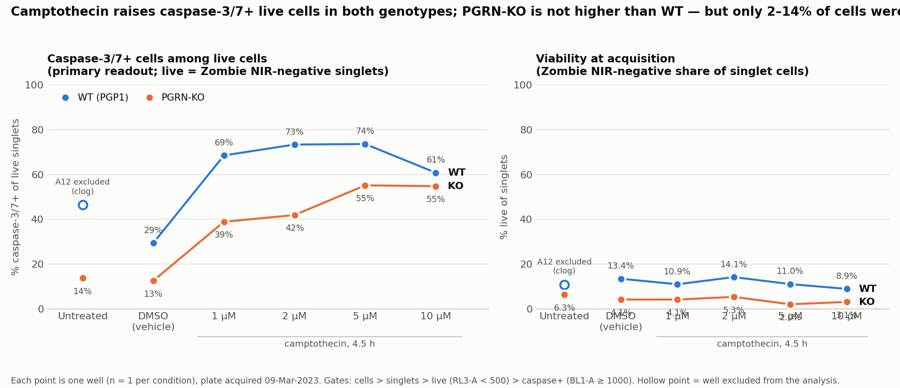
109
tool call · Bash
cd /task/work; python3 - <<'EOF'
s=open('final.py').read()
s=s.replace("def panel(ax,col,title,ylab,ymax,fmt,labelpts=True):","def panel(ax,col,title,ylab,ymax,fmt,labelpts=True,ko_above=False):")
s=s.replace("above = (g=='WT')","above = (g=='WT') or ko_above")
s=s.replace("'% live of singlets',100,'%.1f%%')","'% live of singlets',20,'%.1f%%',ko_above=True)")
s=s.replace("fig.suptitle('Camptothecin raises caspase-3/7+ live cells in both genotypes; PGRN-KO is not higher than WT — but only 2–14% of cells were alive',x=0.012,ha='left',fontsize=12.5,fontweight='bold',color=INK,y=0.985)",
"fig.suptitle('Camptothecin raises caspase-3/7+ live cells in both genotypes; PGRN-KO is not higher than WT.\\nOnly 2–14% of singlet cells were alive at acquisition, so the genotype comparison is not yet reliable.',x=0.012,ha='left',fontsize=12,fontweight='bold',color=INK,y=0.985)")
s=s.replace("plt.tight_layout(rect=(0,0.04,1,0.95))","plt.tight_layout(rect=(0,0.04,1,0.92))")
s=s.replace("axs[1].set","axs[1].set")
open('final.py','w').write(s)
EOF
python3 -I final.py > /dev/null && echo ok110
tool call · Read
{
"file_path": "/task/outputs/figure.png"
}111
tool output
ok
112
tool output
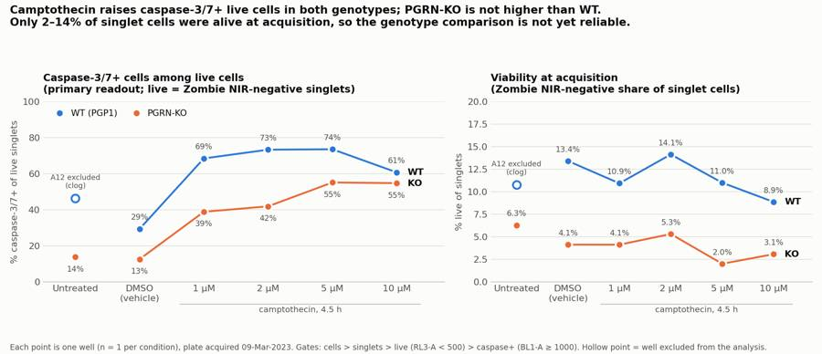
114
tool call · Bash
cd /task/work; python3 - <<'EOF'
s=open('final.py').read()
s=s.replace("axs[0].legend(","axs[1].set_yticks([0,5,10,15,20]); axs[0].legend(")
open('final.py','w').write(s)
EOF
python3 -I final.py > /dev/null && echo ok; python3 -I -c "
import pandas as pd
f=pd.read_csv('/task/outputs/flags.csv',keep_default_na=False)
for _,r in f.iterrows():
if r.issue_type!='none': print(r.well,r.issue_type,r.decision,'\n ',r.evidence)
print(f.issue_type.value_counts().to_dict())
c=pd.read_csv('/task/outputs/counts.csv'); print(c.head(10).to_string()); print(c.groupby('role').population.unique())
"; head -c 1500 /task/outputs/gates.xml115
tool output
ok
A8 other keep_with_note
Transient event-rate burst (pressure pulse/partial blockage release) at 3.3-3.9 s: 8918 events in 0.6 s, about 1.8x the median rate of 839 per 0.1 s; affects 2.3% of the file. Rest of the run is steady and removing the burst window changes % caspase+ of live by <0.4 points (73.6% with burst), so the well is kept.
A12 clog exclude
Flow interrupted then surged: only 2824 of 409074 events (0.7%) arrived in the first 20 s of the 47 s acquisition (largest gap between events 1.75 s; other wells <=0.06 s), then the rate jumped to 22923 events/s at 24-33 s (44% of all events; per-second rate range 0-22923 vs. a steady 6,500-14,000 in other wells). FSC-A median 143690 vs 130592 in the neighbouring WT DMSO well A11, 14.1% coincident events (highest on plate), readout 46.4% caspase+ of live vs 29.4% in A11 while KO untreated and KO DMSO agree (13.8% vs 12.5%).
B8 other keep_with_note
Transient event-rate burst (pressure pulse/partial blockage release) at 4.0-4.5 s: 9995 events in 0.5 s, about 1.9x the median rate of 1075 per 0.1 s; affects 2.0% of the file. Rest of the run is steady and removing the burst window changes % caspase+ of live by <0.4 points (55.2% with burst), so the well is kept.
{'none': 15, 'other': 2, 'clog': 1}
file well population role parent count pct_of_parent
0 Caspase_WT_KO_optimization_caspase_Group_A2.fcs A2 all_events other none 365736 NaN
1 Caspase_WT_KO_optimization_caspase_Group_A2.fcs A2 cells cells all_events 175279 47.925006
2 Caspase_WT_KO_optimization_caspase_Group_A2.fcs A2 singlets singlets cells 150561 85.897911
3 Caspase_WT_KO_optimization_caspase_Group_A2.fcs A2 live live singlets 150559 99.998672
4 Caspase_WT_KO_optimization_caspase_Group_A2.fcs A2 live_casp_pos marker_positive live 3205 2.128734
5 Caspase_WT_KO_optimization_caspase_Group_A2.fcs A2 live_casp_neg other live 147354 97.871266
6 Caspase_WT_KO_optimization_caspase_Group_A2.fcs A2 dead other singlets 2 0.001328
7 Caspase_WT_KO_optimization_caspase_Group_A2.fcs A2 dead_casp_pos other dead 0 0.000000
8 Caspase_WT_KO_optimization_caspase_Group_A2.fcs A2 singlets_casp_pos other singlets 3205 2.128705
9 Caspase_WT_KO_optimization_caspase_Group_A4.fcs A4 all_events other none 440820 NaN
role
cells [cells]
live [live]
marker_positive [live_casp_pos]
other [all_events, live_casp_neg, dead, dead_casp_po...
singlets [singlets]
Name: population, dtype: object
<?xml version='1.0' encoding='UTF-8'?>
<gating:Gating-ML xmlns:gating="http://www.isac-net.org/std/Gating-ML/v2.0/gating" xmlns:data-type="http://www.isac-net.org/std/Gating-ML/v2.0/datatypes" xmlns:transforms="http://www.isac-net.org/std/Gating-ML/v2.0/transformations">
<gating:PolygonGate gating:id="cells">
<gating:dimension gating:compensation-ref="uncompensated">
<data-type:fcs-dimension data-type:name="FSC-A"/>
</gating:dimension>
<gating:dimension gating:compensation-ref="uncompensated">
<data-type:fcs-dimension data-type:name="SSC-A"/>
</gating:dimension>
<gating:vertex>
<gating:coordinate data-type:value="125000.0"/>
<gating:coordinate data-type:value="45000.0"/>
</gating:vertex>
<gating:vertex>
<gating:coordinate data-type:value="125000.0"/>
<gating:coordinate data-type:value="385750.0"/>
</gating:vertex>
<gating:vertex>
<gating:coordinate data-type:value="230000.0"/>
<gating:coordinate data-type:value="620000.0"/>
</gating:vertex>
<gating:vertex>
<gating:coordinate data-type:value="450000.0"/>
<gating:coordinate data-type:value="800000.0"/>
</gating:vertex>
<gating:vertex>
<gating:coordinate data-type:value="650000.0"/>
<gating:coordinate data-type:value="800000.0"/>
</gating:vertex>
<gating:vertex>
<gating:coordinate data-type:value="650000.0"/>
<gating:coordinate data-type:value="220000.0"/>
</gating:vertex>
<gat117
tool call · Bash
cd /task/work; cat > gatefig.py <<'EOF'
import pickle, numpy as np, pandas as pd
import matplotlib; matplotlib.use('Agg'); import matplotlib.pyplot as plt
from matplotlib.path import Path
D=pickle.load(open('D.pkl','rb'))
FSC_LO=125e3
cells=np.array([(FSC_LO,45e3),(FSC_LO,330e3+(FSC_LO-100e3)*2.23),(230e3,620e3),(450e3,800e3),(650e3,800e3),(650e3,220e3),(300e3,70e3),(160e3,45e3)])
sing=np.array([(90e3,75e3),(90e3,112e3),(150e3,162e3),(230e3,205e3),(400e3,235e3),(660e3,250e3),(660e3,205e3),(400e3,165e3),(300e3,146e3),(200e3,118e3),(140e3,88e3)])
L=matplotlib.colors.LogNorm(); a=lambda x: np.arcsinh(np.asarray(x)/150)
ws=[('A6','WT L/D only (FMO for caspase)'),('A11','WT DMSO'),('A9','WT 2 µM camptothecin'),('B11','KO DMSO'),('B9','KO 2 µM camptothecin')]
fig,axs=plt.subplots(len(ws),4,figsize=(17,4*len(ws)))
tk=[-100,0,100,1000,10000,100000]
for row,(w,lab) in zip(axs,ws):
df=D[w]; c=Path(cells).contains_points(df[['FSC-A','SSC-A']].values); s=c&Path(sing).contains_points(df[['FSC-A','FSC-H']].values)
live=s&(df['RL3-A']<500).values
ax=row[0]; ax.hist2d(df['FSC-A'],df['SSC-A'],bins=200,range=[[0,8e5],[0,9e5]],norm=L,cmap='viridis'); ax.plot(*np.vstack([cells,cells[:1]]).T,'r-'); ax.set_xlabel('FSC-A'); ax.set_ylabel('SSC-A'); ax.set_title(f'{w} {lab}\ncells {100*c.mean():.1f}% of all events',fontsize=10)
ax=row[1]; d=df[c]; ax.hist2d(d['FSC-A'],d['FSC-H'],bins=200,range=[[0,7e5],[0,3.5e5]],norm=L,cmap='viridis'); ax.plot(*np.vstack([sing,sing[:1]]).T,'r-'); ax.set_xlabel('FSC-A'); ax.set_ylabel('FSC-H'); ax.set_title(f'singlets {100*s.sum()/c.sum():.1f}% of cells',fontsize=10)
ax=row[2]; d=df[s]; ax.hist2d(a(d['BL1-A']),a(d['RL3-A']),bins=200,range=[[-2,9],[-3,9]],norm=L,cmap='viridis'); ax.axhline(a(500),color='r'); ax.set_xticks(a(tk)); ax.set_xticklabels(tk,fontsize=8); ax.set_yticks(a(tk)); ax.set_yticklabels(tk,fontsize=8)
ax.set_xlabel('BL1-A CellEvent caspase-3/7 (asinh display)'); ax.set_ylabel('RL3-A Zombie NIR'); ax.set_title(f'live (RL3-A < 500) {100*live.sum()/s.sum():.1f}% of singlets',fontsize=10)
ax=row[3]; d=df[live]; ax.hist(a(d['BL1-A']),bins=110,range=(-2,9),color='#2a78d6'); ax.axvline(a(1000),color='r'); ax.set_xticks(a(tk)); ax.set_xticklabels(tk,fontsize=8); ax.set_xlabel('BL1-A CellEvent caspase-3/7, live cells'); ax.set_title(f'live_casp_pos (BL1-A ≥ 1000) {100*(d["BL1-A"]>=1000).mean():.1f}% of live (n live = {len(d)})',fontsize=10)
plt.tight_layout(); plt.savefig('/task/outputs/gating_overview.png',dpi=80); plt.close()
EOF
python3 -I gatefig.py && echo done118
tool output
done
119
tool call · Read
{
"file_path": "/task/outputs/gating_overview.png"
}120
tool output
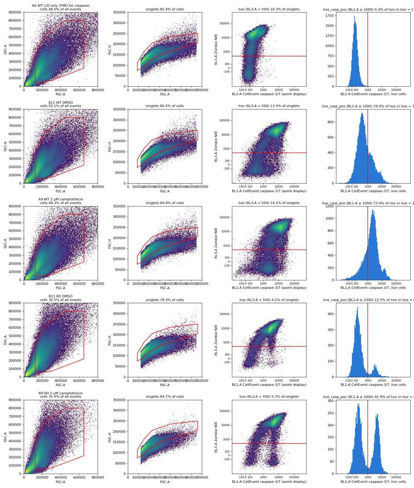
122
tool call · Bash
cd /task/work; sed -i 's/of live (n live = {len(d)})/of live\\nn live = {len(d)}/; s/live_casp_pos (BL1-A ≥ 1000) {100/live_casp_pos (BL1-A ≥ 1000): {100/' gatefig.py && python3 -I gatefig.py && echo done
cat > /task/outputs/report.md <<'EOF'
# Caspase-3/7 assay, WT vs PGRN-KO iPSC-derived neurons — plate acquired 09-Mar-2023
## Question
Is caspase-3/7 activity different in PGRN-KO neurons compared with WT (PGP1) neurons, with camptothecin (1–10 µM, 4.5 h) as the apoptosis inducer — and is this CellEvent/Zombie NIR flow assay ready to be used for the AAV-PGRN rescue experiments?
## Methods
- **Data.** 18 Attune NxT FCS files, one well per sample: 3 staining controls per genotype (no stain, caspase only, L/D only) and 6 fully stained wells per genotype (untreated, DMSO, camptothecin 1/2/5/10 µM). No replicate wells were acquired.
- **Gating (FlowKit 1.2.3, one strategy for all wells, saved in `gates.xml`).** No compensation was applied: the file spillover matrix is identity, and the single-stain controls show no cross-talk (488 nm vs 640 nm lasers). All gates are on raw linear values.
1. `cells` — polygon on FSC-A / SSC-A, FSC-A ≥ 125,000. This removes the debris continuum and a discrete low-scatter particle cluster (FSC 50–100k, SSC 10–30k). That cluster is 3–6% of events in every WT well, including the unstained one, so it is not camptothecin-induced.
2. `singlets` — polygon along the FSC-H vs FSC-A ridge.
3. `live` — RL3-A (Zombie NIR) < 500. The 99.9th percentile of the four wells without Zombie is 221–244.
4. `live_casp_pos` (primary readout) — BL1-A (CellEvent) ≥ 1000 within `live`. This sits in the valley of the bimodal KO distributions; the L/D-only wells (FMO for caspase) give 0.25% (A6) and 0.26% (B6) positive.
5. Supporting populations: `dead` (RL3-A ≥ 500), `dead_casp_pos`, `live_casp_neg`, `singlets_casp_pos`.
- **Metrics.** Primary: 100 × `live_casp_pos` / `live`. Secondary: viability (100 × `live` / `singlets`) and caspase+ of all singlets. No normalisation.
- **QC.** Event rate over time, coincidence counts, saturation and control behaviour were checked per well (`flags.csv`). `gating_overview.png` shows the gates on five representative wells.
## Results
**Primary readout — % caspase-3/7+ of live singlets (one well per condition):**
| Treatment | WT | KO |
|---|---|---|
| Untreated | A12 excluded (46.4%, not used) | 13.8% |
| DMSO vehicle | 29.4% | 12.5% |
| Camptothecin 1 µM | 68.5% | 38.9% |
| Camptothecin 2 µM | 73.4% | 41.9% |
| Camptothecin 5 µM | 73.6% | 55.2% |
| Camptothecin 10 µM | 60.8% | 54.8% |
| Camptothecin, mean of 4 doses ± SD | 69.1 ± 6.0% | 47.7 ± 8.5% |
- **Camptothecin works as a positive control.** Caspase+ live cells rise about 2.4-fold in WT (29.4% → 69.1%) and 3.8-fold in KO (12.5% → 47.7%). The direction holds at every caspase threshold tested (600–2000) and in the median BL1 of live cells (WT 490 → 1465–2023; KO 182 → 387–2328).
- **No usable dose response in WT.** WT is already at plateau at 1 µM and drops at 10 µM. KO rises from 39–42% at 1–2 µM to 55% at 5–10 µM.
- **KO is not higher than WT.** In all five matched conditions KO has fewer caspase+ live cells than WT (vehicle: 12.5% vs 29.4%). This is opposite to the expected direction.
- At vehicle the difference holds for every threshold tested (WT 17–43% vs KO 10–19%).
- Under camptothecin it depends on the threshold: at BL1 ≥ 2000 the pooled values are 46.5% (WT) and 43.6% (KO), which overlap.
- **Viability is very low, and lower in KO.** Only 8.9–14.2% (WT) and 2.0–6.3% (KO) of singlet cells are Zombie-negative; the L/D-only controls show the same (10.3% and 6.5%). The primary readout therefore rests on a small surviving minority (3,300–24,829 live events per well).
- **Dead cells are almost all CellEvent-bright** (96–99% of `dead`), so caspase+ of all singlets is saturated (88–98% in every well) and uninformative. By that metric KO is slightly *higher* than WT at vehicle (92.6% vs 87.6%), simply because KO has more dead cells.
- **Acquisition quality.** Samples were run very concentrated: 366k–612k events in 47 s (about 8,000–13,000 events/s) with 6.6–14.1% coincident events. Singlets are 77–88% of cells.
- **Flags.** A12 (WT untreated) clogged and is excluded: 0.7% of its events arrived in the first 20 s, followed by a surge to about 22,900 events/s. A8 and B8 each had a 0.5 s rate burst (about 2% of events) that does not change the readout and are kept with a note. The other 15 wells, including all six controls, behaved as labelled.
## Conclusion
The assay detects camptothecin-induced caspase-3/7 activation in both genotypes, so the staining chemistry works. It does not show the expected higher caspase activity in PGRN-KO neurons: among live cells KO is lower than WT in every matched condition, while KO has two- to three-fold fewer live cells. With one well per condition and 86–98% of cells dead at acquisition, this genotype difference cannot be read as biology. The run answers the optimisation question (the assay has a window) but not the genotype question; the assay needs optimisation before it is used for AAV-PGRN rescue.
## Caveats
- **n = 1 well per condition** and one differentiation per genotype: no well-to-well variance, no statistics. The pooled camptothecin SD mixes dose and well effects.
- **Survivor bias.** 86–98% of singlets were Zombie-positive, in untreated and vehicle wells too, so most death comes from harvest and staining rather than treatment. KO cells that were apoptotic may already have been lost into the dead gate, which would lower KO's live-gated caspase fraction.
- **WT untreated control lost** (A12 clog). The WT baseline rests on the single DMSO well A11; in KO, DMSO and untreated agree (12.5% vs 13.8%).
- **Threshold dependence.** WT caspase+ live cells are dimmer and not cleanly separated from negatives, whereas KO is bimodal. One threshold is applied to both genotypes, so the WT percentages move with the threshold (WT vehicle 17–43% across
… [8,282 more characters not shown]123
tool output
done
[
{
"comparison": "KO vs WT at vehicle (DMSO): % caspase-3/7+ of live singlets",
"a": "WT_DMSO",
"b": "KO_DMSO",
"direction": "decrease",
"magnitude": "12.5% (KO) vs 29.4% (WT): 16.8 percentage points lower, 0.43-fold; n=1 well each; holds at caspase thresholds 600-2000 (KO 10-19% vs WT 17-43%)",
"confidence": "low"
},
{
"comparison": "KO vs WT under camptothecin (mean of 1, 2, 5, 10 uM wells): % caspase-3/7+ of live singlets",
"a": "WT_CPT_pooled_1to10uM",
"b": "KO_CPT_pooled_1to10uM",
"direction": "decrease",
"magnitude": "47.7% (KO, SD 8.5) vs 69.1% (WT, SD 6.0): 21.4 points lower; threshold-dependent (43.6% vs 46.5% at BL1-A >= 2000)",
"confidence": "low"
},
{
"comparison": "WT: camptothecin (pooled 1-10 uM) vs DMSO: % caspase-3/7+ of live singlets",
"a": "WT_DMSO",
"b": "WT_CPT_pooled_1to10uM",
"direction": "increase",
"magnitude": "29.4% -> 69.1% (2.4-fold, +39.7 points); all four dose wells 60.8-73.6%, no dose response above 1 uM",
"confidence": "medium"
},
{
"comparison": "KO: camptothecin (pooled 1-10 uM) vs DMSO: % caspase-3/7+ of live singlets",
"a": "KO_DMSO",
"b": "KO_CPT_pooled_1to10uM",
"direction": "increase",
"magnitude": "12.5% -> 47.7% (3.8-fold, +35.1 points); dose wells 38.9-55.2%, untreated well 13.8%",
"confidence": "high"
},
{
"comparison": "KO vs WT at vehicle (DMSO): viability (% Zombie NIR-negative of singlets)",
"a": "WT_DMSO__viability",
"b": "KO_DMSO__viability",
"direction": "decrease",
"magnitude": "4.1% (KO) vs 13.4% (WT) live; both far below a usable viability; KO 2.0-6.3% vs WT 8.9-14.2% across all stained wells",
"confidence": "medium"
},
{
"comparison": "KO vs WT at vehicle (DMSO): % caspase-3/7+ of all singlets (live + dead)",
"a": "WT_DMSO__casp_pos_of_all_singlets",
"b": "KO_DMSO__casp_pos_of_all_singlets",
"direction": "no_clear_change",
"magnitude": "92.6% (KO) vs 87.6% (WT); metric saturated at 88-98% in every well because 96-99% of dead cells are CellEvent-bright",
"confidence": "low"
}
]
['A12']
total 888
drwxr-xr-x 2 root root 4096 Nov 10 18:58 .
drwxr-xr-x 5 root root 4096 Nov 10 18:47 ..
-rw-r--r-- 1 root root 5302 Nov 10 18:58 answer.json
-rw-r--r-- 1 root root 5528 Nov 10 18:57 condition_summary.csv
-rw-r--r-- 1 root root 16090 Nov 10 18:53 counts.csv
-rw-r--r-- 1 root root 216168 Nov 10 18:57 figure.png
-rw-r--r-- 1 root root 2356 Nov 10 18:57 flags.csv
-rw-r--r-- 1 root root 5426 Nov 10 18:53 gates.xml
-rw-r--r-- 1 root root 627453 Nov 10 18:58 gating_overview.png
-rw-r--r-- 1 root root 7702 Nov 10 18:58 report.md125
tool call · Bash
cd /task/work; sed -i 's/WT 17–43% vs KO 10–19%/WT 17–43% vs KO 10–15%/' /task/outputs/report.md; sed -i 's/KO 10-19%% vs WT 17-43%%/KO 10-15%% vs WT 17-43%%/' mkanswer.py; python3 -I mkanswer.py >/dev/null; grep -c "10–15%" /task/outputs/report.md; grep -c "10-15%" /task/outputs/answer.json
python3 -I - <<'EOF'
import pandas as pd, json, flowkit as fk, re
c=pd.read_csv('/task/outputs/counts.csv',keep_default_na=False)
assert list(c.columns)==['file','well','population','role','parent','count','pct_of_parent']
assert c.groupby('file').population.apply(lambda s: tuple(s)).nunique()==1 and c.file.nunique()==18
for r in ['cells','singlets','live','marker_positive']: assert c[c.role==r].population.nunique()==1
gs=fk.parse_gating_xml('/task/outputs/gates.xml'); g={x for x,_ in gs.get_gate_ids()}
assert set(c.population)-{'all_events'}==g
f=pd.read_csv('/task/outputs/flags.csv',keep_default_na=False); assert len(f)==18 and list(f.columns)==['file','well','issue_type','evidence','decision']
cs=pd.read_csv('/task/outputs/condition_summary.csv',keep_default_na=False); assert cs.condition.is_unique
assert all((r.sd=='')==(r.n_wells_used==1) for r in cs.itertuples())
a=json.load(open('/task/outputs/answer.json')); assert a['overall_answer'].startswith('partial:')
heads=re.findall(r'^## .*$',open('/task/outputs/report.md').read(),flags=re.M); print(heads)
print('all checks passed')
EOF126
tool output
1 1 ['## Question', '## Methods', '## Results', '## Conclusion', '## Caveats', '## Recommendation'] all checks passed
127
agent
The analysis is complete and all seven deliverables are written. The saved gates reload and reproduce every count in `counts.csv` exactly.
**Answer to the plan's question: partial.** The assay detects camptothecin-induced caspase-3/7 activation in both genotypes, but it does not show the expected higher caspase activity in PGRN-KO, and the genotype comparison is not reliable from this plate.
| % caspase-3/7+ of live singlets | WT | KO |
|---|---|---|
| Untreated | A12 excluded | 13.8% |
| DMSO vehicle | 29.4% | 12.5% |
| Camptothecin 1 µM | 68.5% | 38.9% |
| Camptothecin 2 µM | 73.4% | 41.9% |
| Camptothecin 5 µM | 73.6% | 55.2% |
| Camptothecin 10 µM | 60.8% | 54.8% |
- **Positive control works:** camptothecin raises caspase+ live cells about 2.4-fold in WT and 3.8-fold in KO. WT is already at plateau at 1 µM, so there is no usable dose response there.
- **KO is lower than WT, not higher:** this holds in all five matched conditions. Each condition is a single well, so I rate confidence in the genotype difference as low.
- **Viability is the main problem:** only 8.9–14.2% (WT) and 2.0–6.3% (KO) of singlet cells were Zombie-negative, including in untreated and vehicle wells. The readout therefore rests on a small surviving minority that differs between genotypes.
- **The result depends on the metric:** dead cells are 96–99% CellEvent-bright, so caspase+ of all singlets is saturated (88–98%). By that metric KO is slightly higher than WT at vehicle (92.6% vs 87.6%).
- **Threshold sensitivity:** at vehicle, WT stays above KO at every caspase threshold I tried. Under camptothecin the gap closes at a higher threshold (46.5% vs 43.6% at BL1-A ≥ 2000).
**Flags:**
- **A12 (WT untreated) — excluded for a clog:** 0.7% of its events arrived in the first 20 s, then the rate surged to about 22,900 events/s. The WT baseline now rests on the DMSO well alone.
- **A8 and B8 — kept with a note:** each had a 0.5 s rate burst (about 2% of events) that does not change the readout.
- **The other 15 wells**, including all six controls, behaved as labelled.
**Verdict and next step:** needs optimisation; repeat with a changed harvest and staining workflow, in triplicate wells. I recommend adding CellEvent to the adherent neurons for the last 30 min of treatment, then a gentler, shorter dissociation with cold Zombie staining and immediate acquisition. The target is at least 50% live singlets in vehicle wells before comparing genotypes.
Other caveats are in the report: the DMSO vehicle is about 2% and not matched across doses, and samples were acquired at about 8,000–13,000 events/s with 6.6–14.1% coincident events.
The WT untreated condition has no row in `condition_summary.csv` because its only well is excluded. I also added `gating_overview.png`, which was not requested; it shows the gates on five representative wells.
Files are in `/task/outputs/`:
- gates.xml
- counts.csv
- flags.csv
- condition_summary.csv
- figure.png
- report.md
- answer.json
- gating_overview.png
final result
The analysis is complete and all seven deliverables are written. The saved gates reload and reproduce every count in `counts.csv` exactly. **Answer to the plan's question: partial.** The assay detects camptothecin-induced caspase-3/7 activation in both genotypes, but it does not show the expected higher caspase activity in PGRN-KO, and the genotype comparison is not reliable from this plate. | % caspase-3/7+ of live singlets | WT | KO | |---|---|---| | Untreated | A12 excluded | 13.8% | | DMSO vehicle | 29.4% | 12.5% | | Camptothecin 1 µM | 68.5% | 38.9% | | Camptothecin 2 µM | 73.4% | 41.9% | | Camptothecin 5 µM | 73.6% | 55.2% | | Camptothecin 10 µM | 60.8% | 54.8% | - **Positive control works:** camptothecin raises caspase+ live cells about 2.4-fold in WT and 3.8-fold in KO. WT is already at plateau at 1 µM, so there is no usable dose response there. - **KO is lower than WT, not higher:** this holds in all five matched conditions. Each condition is a single well, so I rate confidence in the genotype difference as low. - **Viability is the main problem:** only 8.9–14.2% (WT) and 2.0–6.3% (KO) of singlet cells were Zombie-negative, including in untreated and vehicle wells. The readout therefore rests on a small surviving minority that differs between genotypes. - **The result depends on the metric:** dead cells are 96–99% CellEvent-bright, so caspase+ of all singlets is saturated (88–98%). By that metric KO is slightly higher than WT at vehicle (92.6% vs 87.6%). - **Threshold sensitivity:** at vehicle, WT stays above KO at every caspase threshold I tried. Under camptothecin the gap closes at a higher threshold (46.5% vs 43.6% at BL1-A ≥ 2000). **Flags:** - **A12 (WT untreated) — excluded for a clog:** 0.7% of its events arrived in the first 20 s, then the rate surged to about 22,900 events/s. The WT baseline now rests on the DMSO well alone. - **A8 and B8 — kept with a note:** each had a 0.5 s rate burst (about 2% of events) that does not change the readout. - **The other 15 wells**, including all six controls, behaved as labelled. **Verdict and next step:** needs optimisation; repeat with a changed harvest and staining workflow, in triplicate wells. I recommend adding CellEvent to the adherent neurons for the last 30 min of treatment, then a gentler, shorter dissociation with cold Zombie staining and immediate acquisition. The target is at least 50% live singlets in vehicle wells before comparing genotypes. Other caveats are in the report: the DMSO vehicle is about 2% and not matched across doses, and samples were acquired at about 8,000–13,000 events/s with 6.6–14.1% coincident events. The WT untreated condition has no row in `condition_summary.csv` because its only well is excluded. I also added `gating_overview.png`, which was not requested; it shows the gates on five representative wells. Files are in `/task/outputs/`: - gates.xml - counts.csv - flags.csv - condition_summary.csv - figure.png - report.md - answer.json - gating_overview.png